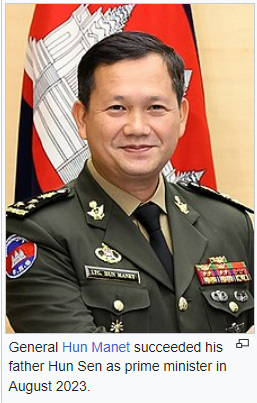
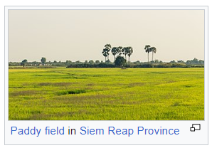
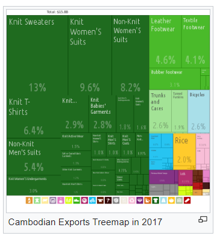

Cambodia
Cambodia (/kæm'boʊdiə/ i; Khmer: កម្ពុជា; UNGEGN: Kâmpŭchéa),[14] officially the Kingdom of Cambodia (Khmer: ព្រះរាជាណាចក្រកម្ពុជា; UNGEGN: Preâh Réachéanachâkr Kâmpŭchéa), is a country in Mainland Southeast Asia, spanning an area of 181,035 square kilometres (69,898 square miles), bordered by Thailand to the northwest, Laos to the north, Vietnam to the east, and the Gulf of Thailand to the southwest. The capital and most populous city is Phnom Penh.
In 802 AD, Jayavarman II declared himself king, uniting the warring Khmer princes of Chenla under the name "Kambuja".[15] This marked the beginning of the Khmer Empire. The Indianised kingdom facilitated the spread of first Hinduism and then Buddhism to Southeast Asia and undertook religious infrastructural projects throughout the region. In the fifteenth century, Cambodia experienced a decline of power, and in 1863, it became a protectorate of France. After a period of Japanese occupation during the Second World War, Cambodia gained independence in 1953. The Vietnam War extended into the country in 1965 via the Ho Chi Minh and Sihanouk trails. A 1970 coup installed the US-aligned Khmer Republic, which was overthrown by the Khmer Rouge in 1975. The Khmer Rouge ruled the country and carried out the Cambodian genocide from 1975 until 1979, when they were ousted in the Cambodian–Vietnamese War. The Vietnamese-occupied People's Republic of Kampuchea became the de facto government. Following the 1991 Paris Peace Accords which formally ended the war with Vietnam, Cambodia was governed by a United Nations mission (1992–93). The UN withdrew after holding elections in which around 90% of the registered voters cast ballots. The 1997 coup d'état consolidated power under Prime Minister Hun Sen and the Cambodian People's Party (CPP). While constitutionally a multi-party state,[16] CPP dominates the political system and dissolved its main opposition party in 2017, making Cambodia a de facto one-party state.[17]
The United Nations designates Cambodia as a least developed country.[18] Cambodia is a member of the United Nations, ASEAN, the RCEP, the East Asia Summit, the WTO, the Non-Aligned Movement and La Francophonie. Cambodia is a dialogue partner of the Shanghai Cooperation Organization.[19][20] Agriculture remains the dominant economic sector, with growth in textiles, construction, garments, and tourism leading to increased foreign investment and international trade.[21] Cambodia is considered among the most vulnerable countries to climate change.
Etymology
To Top
The Kingdom of Cambodia is the official English name of the country. The English Cambodia is an anglicisation of the French Cambodge, which in turn is the French transliteration of the Khmer កម្ពុជា (Kâmpŭchéa, pronounced [kampuciə]). Kâmpŭchéa is the shortened alternative to the country's official name in Khmer ព្រះរាជាណាចក្រកម្ពុជា (Preăh Réachéanachâkr Kâmpŭchéa, pronounced [preah riəciənaːcak kampuciə]. The Khmer endonym កម្ពុជា Kâmpŭchéa derives from the Sanskrit name कम्बोजदेश Kambojadeśa, composed of देश Deśa ("land of" or "country of") and कम्बोज (Kamboja), referring to the descendants of Kambu (a legendary Indian sage from the ancient Indian kingdom of Kamboja).[22] The term Cambodia was already in use in Europe as early as 1524, since Antonio Pigafetta cites it in his work Relazione del primo viaggio intorno al mondo (1524–1525) as Camogia.[23]
Scholar George Coedes refers to a 10th-century inscription of a Cambodian dynastic legend in which the hermit Kambu Swayambhuva and the celestial nymph Mera unite and establish the Cambodian Solar royal dynasty (Kambu-Mera), that begins with the Chenla ruler Srutavarman and his son Sreshthavarman. Coedes suggests that the Kambu Swayambhuva legend has its origins in southern India, as a version of the Kanchi Pallava dynasty creation myth.[24][25]
Colloquially, Cambodians refer to their country as either Srok Khmer (ស្រុកខ្មែរ Srŏk Khmêr, pronounced [srok kʰmae]; meaning "Land of the Khmers"), or the slightly more formal ប្រទេសកម្ពុជា (Prâtés Kâmpŭchéa, pronounced [prɑteh kampuciə]; "Country of Kampuchea"). The name Cambodia is used most often in the Western world while Kampuchea is more widely used in the East.[26][27][28]
History
Pre-history
To TopThere exists sparse evidence for a Pleistocene human occupation of present-day Cambodia, which includes quartz and quartzite pebble tools found in terraces along the Mekong River, in Stung Treng and Kratié provinces, and in Kampot Province, although their dating is unreliable.[29] Some slight archaeological evidence shows communities of hunter-gatherers inhabited the region during Holocene: the most ancient archaeological discovery site in Cambodia is considered to be the cave of Laang Spean, which belongs to the Hoabinhian period. Excavations in its lower layers produced a series of radiocarbon dates around 6000 BC.[29][30] Upper layers in the same site gave evidence of transition to Neolithic, containing the earliest dated earthenware ceramics in Cambodia.[31]
Archaeological records for the period between Holocene and Iron Age remain equally limited. A pivotal event in Cambodian prehistory was the slow penetration of the first rice farmers from the north, which began in the late third millennium BC.[32] The most curious prehistoric evidence in Cambodia are the various "circular earthworks" discovered in the red soils near Memot and in the adjacent region of Vietnam in the latter 1950s. Their function and age are still debated, but some of them possibly date from second millennium BC.[33][34] Other prehistoric sites of somewhat uncertain date are Samrong Sen (not far from the ancient capital of Oudong), where the first investigations began in 1875,[35] and Phum Snay, in the northern province of Banteay Meanchey.[36]
Iron was worked by about 500 BC, with supporting evidence coming from the Khorat Plateau, in modern-day Thailand. In Cambodia, some Iron Age settlements were found beneath Baksei Chamkrong and other Angkorian temples while circular earthworks at the site of Lovea a few kilometres north-west of Angkor. Burials testify to improvement of food availability and trade, and the existence of a social structure and labour organization.[37] Different kinds of glass beads recovered from several sites across Cambodia, such as the Phum Snay site in the northwest and the Prohear site in the southeast, suggest that there were two main trading networks at the time. The two networks were separated by time and space, which indicate that there was a shift from one network to the other at about 2nd–4th century AD, probably due to changes in socio-political powers.[37]
Pre-Angkorian and Angkorian era
To TopDuring the 3rd, 4th, and 5th centuries, the Indianised states of Funan and its successor, Chenla, coalesced in present-day Cambodia and southwestern Vietnam. For more than 2,000 years, what was to become Cambodia absorbed influences from India, passing them on to other Southeast Asian civilisations that are now Thailand and Laos.[38] Little else is known for certain of these polities, however Chinese chronicles and tribute records do make mention of them. It is believed that the territory of Funan may have held the port known to Alexandrian geographer Claudius Ptolemy as "Kattigara". The Chinese chronicles suggest that after Jayavarman I of Chenla died around 681, turmoil ensued which resulted in the division of the kingdom into Land Chenla and Water Chenla which was loosely ruled by weak princes under the dominion of Java.
The Khmer Empire grew out of these remnants of Chenla, becoming firmly established in 802 when Jayavarman II (reigned c. 790 – c. 835) declared independence from Java and proclaimed himself a Devaraja. He and his followers instituted the cult of the God-king and began a series of conquests that formed an empire which flourished in the area from the 9th to the 15th centuries.[39] During the rule of Jayavarman VIII the Angkor empire was attacked by the Mongol army of Kublai Khan, however, the king was able to buy peace.[40] Around the 13th century, Theravavada missionaries from Sri Lanka reintroduced Theravada Buddhism to Southeast Asia; having sent missionaries previously in 1190s.[41][42] The religion spread and eventually displaced Hinduism and Mahayana Buddhism as the popular religion of Angkor; however it was not the official state religion until 1295 when Indravarman III took power.[43]
The Khmer Empire was Southeast Asia's largest empire during the 12th century. The empire's centre of power was Angkor, where a series of capitals were constructed during the empire's zenith. In 2007 an international team of researchers using satellite photographs and other modern techniques concluded that Angkor had been the largest pre-industrial city in the world with an urban sprawl of 2,980 square kilometres (1,151 square miles).[44] The city, which could have supported a population of up to one million people[45] and Angkor Wat, the best known and best-preserved religious temple at the site, still serves as a reminder of Cambodia's past as a major regional power. The empire, though in decline, remained a significant force in the region until its fall in the 15th century.
Post-Angkor Period
To TopAfter a long series of wars with neighbouring kingdoms, Angkor was sacked by the Ayutthaya Kingdom and abandoned in 1432 because of ecological failure and infrastructure breakdown.[46][47] This led to a period of economic, social, and cultural stagnation when the kingdom's internal affairs came increasingly under the control of its neighbours. By this time, the Khmer penchant for monument building had ceased. Older faiths such as Mahayana Buddhism and the Hindu cult of the god-king had been supplanted by Theravada Buddhism.
The court moved the capital to Longvek where the kingdom sought to regain its glory through maritime trade. The first mention of Cambodia in European documents was in 1511 by the Portuguese. Portuguese travellers described the city as a place of flourishing wealth and foreign trade. Continued wars with Ayutthaya and the Vietnamese resulted in the loss of more territory and Longvek being conquered and destroyed by King Naresuan the Great of Ayutthaya in 1594. A new Khmer capital was established at Oudong south of Longvek in 1618, but its monarchs could survive only by entering into what amounted to alternating vassal relationships with the Siamese and Vietnamese for the next three centuries with only a few short-lived periods of relative independence.
The hill tribe people in Cambodia were "hunted incessantly and carried off as slaves by the Siamese (Thai), the Annamites (Vietnamese), and the Cambodians".[48][49]
In the nineteenth century, a renewed struggle between Siam and Vietnam for control of Cambodia resulted in a period when Cambodia became the Tây Thành Province of Nguyễn Vietnam, during which Vietnamese officials attempted to force the Khmers to adopt Vietnamese customs. This led to several rebellions against the Vietnamese and appeals to Thailand for assistance. The Siamese–Vietnamese War (1841–1845) ended with an agreement to place the country under joint suzerainty. This later led to the signing of a treaty for French Protection of Cambodia by King Norodom Prohmborirak.
French colonisation
To TopIn 1863, King Norodom, who had been installed by Siam,[50] sought the protection of Cambodia from Siam by French rule. In 1867, Rama IV signed a treaty with France, renouncing suzerainty over Cambodia in exchange for the control of Battambang and Siem Reap provinces which officially became part of Siam. The provinces were ceded back to Cambodia by a border treaty between France and Siam in 1907.
Cambodia continued as a protectorate of France from 1867 to 1953, administered as part of the colony of French Indochina, though occupied by the Japanese empire from 1941 to 1945.[51] and briefly existing as the puppet state of Kingdom of Kampuchea in mid-1945. Between 1874 and 1962, the total population increased from about 946,000 to 5.7 million.[52] After King Norodom's death in 1904, France manipulated the choice of king, and Sisowath, Norodom's brother, was placed on the throne. The throne became vacant in 1941 with the death of Monivong, Sisowath's son, and France passed over Monivong's son, Monireth, feeling he was too independently minded. Instead, Norodom Sihanouk, a maternal grandson of King Sisowath was enthroned. The French thought young Sihanouk would be easy to control.[51] They were wrong, however, and under the reign of King Norodom Sihanouk, Cambodia gained independence from France on 9 November 1953.[51]
Independence and the Vietnam War
To TopCambodia became a constitutional monarchy under King Norodom Sihanouk. When French Indochina was given independence, Cambodia lost hope of regaining control over the Mekong Delta as it was awarded to Vietnam.[citation needed] Formerly part of the Khmer Empire, the area had been controlled by the Vietnamese since 1698,[53] with King Chey Chettha II granting the Vietnamese permission to settle in the area decades before.[54] This remains a diplomatic sticking point with over one million ethnic Khmers (the Khmer Krom) still living in this region. The Khmer Rouge attempted invasions to recover the territory which, in part, led to Vietnam's invasion of Cambodia and deposition of the Khmer Rouge.

In 1955, Sihanouk abdicated in favour of his father to participate in politics and was elected prime minister. Upon his father's death in 1960, Sihanouk again became head of state, taking the title of prince. As the Vietnam War progressed, Sihanouk adopted an official policy of neutrality in the Cold War. Sihanouk allowed the Vietnamese communists to use Cambodia as a sanctuary and a supply route for their arms and other aid to their armed forces fighting in South Vietnam. This policy was perceived as humiliating by many Cambodians. In December 1967 Washington Post journalist Stanley Karnow was told by Sihanouk that if the US wanted to bomb the Vietnamese communist sanctuaries, he would not object unless Cambodians were killed.[55]
The same message was conveyed to US President Johnson's emissary Chester Bowles in January 1968.[56] However, in public Sihanouk refuted the right of the U.S. to use air strikes in Cambodia, and on 26 March he said "these criminal attacks must immediately and definitively stop". On 28 March a press conference was held and Sihanouk appealed to the international media: "I appeal to you to publicise abroad this very clear stand of Cambodia—that is, I will, in any case, oppose all bombings on Cambodian territory under whatever pretext." Nevertheless, the public pleas of Sihanouk were ignored and the bombing continued.[57] Members of the government and army became resentful of Sihanouk's ruling style as well as his tilt away from the United States.
Khmer Republic (1970-1975)
To TopWhile visiting Beijing in 1970 Sihanouk was ousted by a military coup led by Prime Minister General Lon Nol and Prince Sisowath Sirik Matak. US support for the coup remains unproven.[58] However, once the coup was completed, the new regime, which immediately demanded that the Vietnamese communists leave Cambodia, gained the political support of the United States. The North Vietnamese and Viet Cong forces, desperate to retain their sanctuaries and supply lines from North Vietnam, immediately launched armed attacks on the new government. The king urged his followers to help in overthrowing this government, hastening the onset of civil war.[59]
Soon Khmer Rouge rebels began using him to gain support. However, from 1970 until early 1972, the Cambodian conflict was largely one between the government and army of Cambodia, and the armed forces of North Vietnam. As they gained control of Cambodian territory, the Vietnamese communists imposed a new political infrastructure, which was eventually dominated by the Cambodian communists now referred to as the Khmer Rouge.[61] Between 1969 and 1973, Republic of Vietnam and US forces bombed Cambodia in an effort to disrupt the Viet Cong and Khmer Rouge.
Documents uncovered from the Soviet archives after 1991 reveal that the North Vietnamese attempt to overrun Cambodia in 1970 was launched at the explicit request of the Khmer Rouge and negotiated by Pol Pot's then second in command, Nuon Chea.[62] NVA units overran many Cambodian army positions while the Communist Party of Kampuchea (CPK) expanded their small-scale attacks on lines of communication. In response to the North Vietnamese invasion, US President Richard Nixon announced that US and South Vietnamese ground forces had entered Cambodia in a campaign aimed at destroying NVA base areas in Cambodia (see Cambodian Incursion).[63] Although a considerable quantity of equipment was seized or destroyed by US and South Vietnamese forces, containment of North Vietnamese forces proved elusive.
The Khmer Republic's leadership was plagued by disunity. In 1972, a constitution was adopted, a parliament elected, and Lon Nol became president. But disunity, the problems of transforming a 30,000-man army into a national combat force of more than 200,000 men, and spreading corruption weakened the civilian administration and army. The Communist insurgency inside Cambodia continued to grow, aided by supplies and military support from North Vietnam. Pol Pot and Ieng Sary asserted their dominance over the Vietnamese-trained communists, many of whom were purged. At the same time, the CPK forces became stronger and more independent of their Vietnamese patrons. By 1973, the CPK were fighting battles against government forces with little or no North Vietnamese troop support, and they controlled nearly 60% of Cambodia's territory and 25% of its population. The government made three unsuccessful attempts to enter into negotiations with the insurgents, but by 1974, the CPK were operating openly as divisions, and some of the NVA combat forces had moved into South Vietnam. More than 2 million refugees from the war lived in Phnom Penh and other cities.
On New Year's Day 1975, Communist troops launched an offensive which, in 117 days of the hardest fighting of the war, led to the collapse of the Khmer Republic. Simultaneous attacks around the perimeter of Phnom Penh pinned down Republican forces, while other CPK units overran fire bases controlling the vital lower Mekong resupply route. A US-funded airlift of ammunition and rice ended when Congress refused additional aid for Cambodia. The Lon Nol government in Phnom Penh surrendered on 17 April 1975, just five days after the US mission evacuated Cambodia.[64]
Khmer Rouge regime (1975-1978)
To TopThe Khmer Rouge reached Phnom Penh and took power in 1975. Led by Pol Pot, they changed the official name of the country to Democratic Kampuchea. The new regime modelled itself on Maoist China during the Great Leap Forward, immediately evacuated the cities, and sent the entire population on forced marches to rural work projects. They attempted to rebuild the country's agriculture on the model of the 11th century, discarded Western medicine, and destroyed temples, libraries, and anything considered Western.
Estimates as to how many people were killed by the Khmer Rouge regime range from approximately one to three million; the most commonly cited figure is two million (about a quarter of the population).[65][66][67] This era gave rise to the term Killing Fields, and the prison Tuol Sleng became notorious for its history of mass killing. Hundreds of thousands fled across the border into neighbouring Thailand. The regime disproportionately targeted ethnic minority groups. The Cham Muslims suffered serious purges with as much as half of their population exterminated.[68] Pol Pot was determined to keep his power and disenfranchise any enemies or potential threats, and thus increased his violent and aggressive actions against his people.[69]
Forced repatriation in 1970 and deaths during the Khmer Rouge era reduced the Vietnamese population in Cambodia from between 250,000 and 300,000 in 1969 to a reported 56,000 in 1984.[52] However, most of the victims of the Khmer Rouge regime were not ethnic minorities but ethnic Khmer. Professionals, such as doctors, lawyers and teachers, were also targeted. According to Robert D. Kaplan, "eyeglasses were as deadly as the yellow star" as they were seen as a sign of intellectualism.[70]
Religious institutions were targeted by the Khmer Rouge particularly fiercely. Religion was so viciously persecuted to such a terrifying extent that the vast majority of Cambodia's historic architecture, 95% of Cambodia's Buddhist temples, was completely destroyed.[71]
Vietnamese occupation and transition (1978-1992)
To TopIn November 1978, Vietnamese troops invaded Cambodia in response to border raids by the Khmer Rouge[72] and conquered it. The People's Republic of Kampuchea (PRK) was established as a pro-Soviet state led by the Kampuchean People's Revolutionary Party, a party created by the Vietnamese in 1951, and led by a group of Khmer Rouge who had fled Cambodia to avoid being purged by Pol Pot and Ta Mok.[73] It was fully beholden to the occupying Vietnamese army and under the direction of the Vietnamese ambassador to Phnom Penh. Its arms came from Vietnam and the Soviet Union.[74]
In opposition to the newly created state, a government-in-exile referred to as the Coalition Government of Democratic Kampuchea (CGDK) was formed in 1981 from three factions.[74] This consisted of the Khmer Rouge, a royalist faction led by Sihanouk, and the Khmer People's National Liberation Front. Its credentials were recognised by the United Nations. The Khmer Rouge representative to the UN, Thiounn Prasith, was retained, but he had to work in consultation with representatives of the noncommunist Cambodian parties.[75][76] The refusal of Vietnam to withdraw from Cambodia led to economic sanctions[77] by the US and its allies.[specify]
Peace efforts began in Paris in 1989 under the State of Cambodia, culminating two years later in October 1991 in a Paris Comprehensive Peace Settlement. The UN was given a mandate to enforce a ceasefire and deal with refugees and disarmament known as the United Nations Transitional Authority in Cambodia (UNTAC).[78]
Modern Cambodia (1993-present)
To TopIn 1993, the monarchy was restored with Norodom Sihanouk reinstated as King, and the first post-war election was coordinated by UNTAC. The election was won by FUNCINPEC led by Sihanouk's son Ranariddh in a hung parliament. A power-sharing agreement was agreed with Ranariddh and Hun Sen of the Cambodian People's Party both simultaneously being co-Prime Ministers after the CPP threatened to secede part of the country if power was fully transferred to FUNCINPEC. The stability established following the conflict was shaken in 1997 by a coup d'état led by the co-Prime Minister Hun Sen, who ousted Ranariddh and other parties represented in the government and consolidated power for the CPP.[79][80] After its government was able to stabilize under Sen, Cambodia was accepted into the Association of Southeast Asian Nations (ASEAN) on 30 April 1999.[81][82] Norodom Sihamoni was crowned Cambodia's king in 2004 after his father Sihanouk's abdication.[83]
During the late 1990s and early 2000s, reconstruction efforts progressed which led to some political stability through a multiparty democracy under a constitutional monarchy[84] although Sen's rule has been marred by human rights abuses and corruption.[85] Cambodia's economy grew rapidly in the 2000s and 2010s,[86] and it received considerable investment and infrastructure development support from China as part of its Belt and Road Initiative.[87]
A UN-backed war crimes tribunal, the Khmer Rouge Tribunal sought out to investigate crimes committed during the Democratic Kampuchea period and prosecute its leaders. However, Hun Sen has opposed extensive trials or investigations of former Khmer Rouge officials.[88] In July 2010, Kang Kek Iew was the first Khmer Rouge member found guilty of war crimes and crimes against humanity in his role as the former commandant of the S21 extermination camp and he was sentenced to life in prison.[89][90] In August 2014, the tribunal sentenced Khieu Samphan, the regime's 83-year-old former head of state, and Nuon Chea, its 88-year-old chief ideologue, to life in prison on war crimes charges for their role in the country's terror period in the 1970s.[needs update]
After the 2013 Cambodian general election, allegations of voter fraud from opposition party Cambodia National Rescue Party led to widespread anti-government protests that continued into the following year. The protests ended after a crackdown by government forces.[91][92] The Cambodia National Rescue Party was dissolved ahead of the 2018 Cambodian general election and the ruling Cambodian People's Party also enacted tighter curbs on mass media.[93] The CPP won every seat in the National Assembly without major opposition, effectively solidifying de facto one-party rule in the country.[94][95]
The global COVID-19 pandemic spread to Cambodia in early 2020. Despite minimising the disease's spread for much of 2020[96] the country's health system was put under strain by a major outbreak in early 2021, which prompted several lockdowns.[97] It also had a severe economic impact, with the tourism industry particularly affected due to international travel restrictions.[98]
Prime Minister Hun Sen assumed office 38 years ago and is one of the world's longest-serving leaders. He has been accused of crackdowns on opponents and critics. In December 2021, Hun Sen announced his support for his son Hun Manet to succeed him after the next general election in 2023.[99] In October 2022, Hun Sen warned CPP members that the country's newest and largest opposition party, the Candlelight Party, may be dissolved before the 2023 general election.[17] The warning comes after a June 2022 lawsuit filed by the National Election Committee against the party's deputy president, Son Chhay, accusing him of defamation by speaking out against electoral fraud by the CPP.[100]
A July 2023 Human Rights Watch report showed numerous and significant election fraud and vote tampering in the June 2022 commune elections.[101]
Geograpgy
To Top

Cambodia has an area of 181,035 square kilometres (69,898 square miles) and lies entirely within the tropics, between latitudes 10° and 15°N, and longitudes 102° and 108°E. It borders Thailand to the north and west, Laos to the northeast, and Vietnam to the east and southeast. It has a 443-kilometre (275-mile) coastline along the Gulf of Thailand.[14][102]
Cambodia's landscape is characterised by a low-lying central plain that is surrounded by uplands and low mountains and includes the Tonle Sap (Great Lake) and the upper reaches of the Mekong River delta. Extending outward from this central region are transitional plains, thinly forested and rising to elevations of about 650 feet (200 metres) above sea level.
To the north the Cambodian plain abuts a sandstone escarpment, which forms a southward-facing cliff stretching more than 200 miles (320 kilometres) from west to east and rising abruptly above the plain to heights of 600 to 1,800 feet (180–550 metres). This cliff marks the southern limit of the Dângrêk Mountains.
Flowing south through Cambodia's eastern regions is the Mekong River. East of the Mekong the transitional plains gradually merge with the eastern highlands, a region of forested mountains and high plateaus that extend into Laos and Vietnam. In southwestern Cambodia two distinct upland blocks, the Krâvanh Mountains and the Dâmrei Mountains, form another highland region that covers much of the land area between the Tonle Sap and the Gulf of Thailand.
In this remote and largely uninhabited area, Phnom Aural, Cambodia's highest peak rises to an elevation of 5,949 feet (1,813 metres).[103] The southern coastal region adjoining the Gulf of Thailand is a narrow lowland strip, heavily wooded and sparsely populated, which is isolated from the central plain by the southwestern highlands.
The most distinctive geographical feature is the inundations of the Tonle Sap, measuring about 2,590 square kilometres (1,000 square miles) during the dry season and expanding to about 24,605 square kilometres (9,500 square miles) during the rainy season. This densely populated plain, which is devoted to wet rice cultivation, is the heartland of Cambodia.[104] Much of this area has been designated as a biosphere reserve.[104]
Climate
To TopCambodia's climate, like that of the rest of Southeast Asia, is dominated by monsoons, which are known as tropical wet and dry because of the distinctly marked seasonal differences. Cambodia has a temperature range from 21 to 35 °C (70 to 95 °F) and experiences tropical monsoons. Southwest monsoons blow inland bringing moisture-laden winds from the Gulf of Thailand and Indian Ocean from May to October. The northeast monsoon ushers in the dry season, which lasts from November to April. The country experiences the heaviest precipitation from September to October with the driest period occurring from January to February.
According to the International Development Research Center and The United Nations, Cambodia is considered Southeast Asia's most vulnerable country to the effects of climate change, alongside the Philippines.[105][106] Nearly all provinces in Cambodia are affected by climate change.[107] Rural coastal populations are particularly at risk. Shortages of clean water, extreme flooding, mudslides, higher sea levels and potentially destructive storms are of particular concern, according to the Cambodia Climate Change Alliance. Climate change has also had a major impact on water levels, ecology and productivity of the Tonlé Sap in recent years, affecting the food security and agriculture of a large proportion of Cambodia's population.[108][109]
Cambodia has two distinct seasons. The rainy season, which runs from May to October, can see temperatures drop to 22 °C (72 °F) and is generally accompanied with high humidity. The dry season lasts from November to April when temperatures can rise up to 40 °C (104 °F) around April. Disastrous flooding occurred in 2001 and again in 2002, with some degree of flooding almost every year.[110] Severe flooding also affected 17 provinces in Cambodia during the 2020 Pacific typhoon season.[111]
Biodiversity and conservation
To TopCambodia's biodiversity is largely founded on its seasonal tropical forests, containing some 180 recorded tree species, and riparian ecosystems. There are 212 mammal species, 536 bird species, 240 reptile species, 850 freshwater fish species (Tonle Sap Lake area), and 435 marine fish species recorded by science. Much of this biodiversity is contained around the Tonle Sap Lake and the surrounding biosphere.[112]
The Tonle Sap Biosphere Reserve is a reserve surrounding the Tonle Sap lake. It encompasses the lake and nine provinces: Kampong Thom, Siem Reap, Battambang, Pursat, Kampong Chhnang, Banteay Meanchey, Pailin, Oddar Meanchey and Preah Vihear. In 1997, it was successfully nominated as a UNESCO Biosphere Reserve.[113] Other key habitats include the evergreen and dry Dipterocarp forests of Mondolkiri province, protected by Keo Seima Wildlife Sanctuary, Phnom Prich Wildlife Sanctuary, and Srepok Wildlife Sanctuary, as well as Ratanakiri province, and the Cardamom Mountains ecosystem, including Preah Monivong National Park, Botum-Sakor National Park, and the Phnom Aural Wildlife Sanctuary and Phnom Samkos Wildlife Sanctuary.
The Worldwide Fund for Nature recognises six distinct terrestrial ecoregions in Cambodia – the Cardamom Mountains rain forests, Central Indochina dry forest, Southeast Indochina dry evergreen forest, Southern Annamite Range tropical forest, Tonle Sap freshwater swamp forest, and Tonle Sap-Mekong peat swamp forest.[114]
The rate of deforestation in Cambodia is one of the highest in the world and it is often perceived as the most destructive, singular environmental issue in the country.[115] Cambodia's primary forest cover fell from over 70% in 1969 to just 3.1% in 2007. Since 2007, less than 3,220 km2 (1,243 sq mi) of primary forest remain with the result that the future sustainability of the forest reserves of Cambodia is under severe threat.[116][117] In 2010–2015, the annual rate of deforestation was 1.3%. The environmental degradation also includes national parks and wildlife sanctuaries on a large scale and many endangered and endemic species are now threatened with extinction due to loss of habitats. Reasons for the deforestation in Cambodia range from opportunistic illegal loggings to large scale clearings from big construction projects and agricultural activities. The deforestation involves the local population, Cambodian businesses and authorities as well as transnational corporations from all over the world.[118][119]
Plans for hydroelectric development in the Greater Mekong Subregion, by Laos in particular, pose a "real danger to the food supply of Vietnam and Cambodia. Upstream dams will imperil the fish stocks that provide the vast majority of Cambodia's protein and could also denude the Mekong River of the silt Vietnam needs for its rice basket." The rich fisheries of Tonle Sap, the largest freshwater lake in Southeast Asia, largely supply the impoverished country's protein. The lake is unusual: It all but disappears in the dry season and then expands massively as water flow from the Mekong backs up when the rains come. "Those fish are so important for their livelihoods, both economically and nutritionally", said Gordon Holtgrieve, a professor at the University of Washington; he points out that none of the dams that are either built or being built on the Mekong river "are pointing at good outcomes for the fisheries".[120]
In the 2010s, the Cambodian government and educational system has increased its involvement and co-operation with both national and international environmental groups.[121][122][123] A new National Environmental Strategy and Action Plan (NESAP) for Cambodia is to be implemented from late 2016 to 2023 and contains new ideas for how to incite a green and environmentally sustainable growth for the country.[124]
Politics
Government
To TopNational politics in Cambodia take place within the framework of the nation's constitution of 1993. The government is a constitutional monarchy operated as a parliamentary representative democracy. The Prime Minister of Cambodia, currently Hun Manet, is the head of government, while the King of Cambodia (currently Norodom Sihamoni) is the head of state. The prime minister is appointed by the king, on the advice and with the approval of the National Assembly. The prime minister and the ministerial appointees exercise executive power.
Legislative powers are shared by the executive and the bicameral Parliament of Cambodia (សភាតំណាងរាស្ត្រ, sâphéa tâmnang réastrâ), which consists of a lower house, the National Assembly (រដ្ឋសភា, rôdthâsâphéa) and an upper house, the Senate (ព្រឹទ្ធសភា, prœ̆tthôsâphéa). Members of the 123-seat National Assembly are elected through a system of proportional representation and serve for a maximum term of five years. The Senate has 61 seats, two of which are appointed by the king and two others by the National Assembly, and the rest elected by the commune councillors from the 24 provinces of Cambodia. Senators serve six-year terms.[125]
On 14 October 2004, King Norodom Sihamoni was selected by a special nine-member Royal Throne Council, part of a selection process that was quickly put in place after the abdication of King Norodom Sihanouk a week prior. Sihamoni's selection was endorsed by Prime Minister Hun Sen and National Assembly Speaker Prince Norodom Ranariddh (the king's half-brother and current chief advisor), both members of the throne council. He was enthroned in Phnom Penh on 29 October 2004.
Officially a multiparty democracy, in reality, "the country remain[ed] a one-party state dominated by the Cambodian People's Party and Prime Minister Hun Sen, a recast Khmer Rouge official in power since 1985. The open doors to new investment during his reign have yielded the most access to a coterie of cronies of his and his wife, Bun Rany."[attribution needed][126] Cambodia's government has been described by Human Rights Watch's Southeast Asian director, David Roberts, as a "relatively authoritarian coalition via a superficial democracy".[127]
Prime Minister Hun Sen vowed to rule until he turned 74.[128][91] His government was regularly accused of ignoring human rights and suppressing political dissent. The 2013 election results were disputed by the opposition, leading to demonstrations in the capital. Demonstrators were injured and killed in Phnom Penh where a reported 20,000 protesters gathered, with some clashing with riot police.[129] From a humble farming background, Hun Sen was just 33 when he took power in 1985, and was by some considered a long-ruling dictator.[130] Hun Sen was succeeded by his son Hun Manet as Prime Minister in August 2023 following an election that was deemed to be neither free nor fair.[5][6][7] Hun Sen remains the de facto ruler of Cambodia through his continued leadership of the Cambodian People's Party.[131]
Since the 2017 crackdowns on political dissent and free press, Cambodia has been described as a de facto one-party state.[132][133][134]
Foreign relations
To TopThe foreign relations of Cambodia are handled by the Ministry of Foreign Affairs under Prak Sokhon. Cambodia is a member of the United Nations, the World Bank, and the International Monetary Fund. It is a member of the Asian Development Bank (ADB), ASEAN, and joined the WTO in 2004. In 2005 Cambodia attended the inaugural East Asia Summit in Malaysia.
Cambodia has established diplomatic relations with numerous countries; the government reports twenty embassies in the country[135] including many of its Asian neighbours and those of important players during the Paris peace negotiations, including the US, Australia, Canada, China, the European Union (EU), Japan, and Russia.[136] As a result of its international relations, various charitable organisations have assisted with social, economic, and civil infrastructure needs.
While the violent ruptures of the 1970s and 1980s have passed, several border disputes between Cambodia and its neighbours persist. There are disagreements over some offshore islands and sections of the boundary with Vietnam and undefined maritime boundaries. Cambodia and Thailand also have border disputes, with troops clashing over land immediately adjacent to the Preah Vihear temple in particular, leading to a deterioration in relations. Most of the territory belongs to Cambodia, but a combination of Thailand disrespecting international law, Thai troops upbuild in the area and lack of resources for the Cambodian military have left the situation unsettled since 1962.[137][138]
Cambodia and China have cultivated ties in the 2010s. A Chinese company with the support of the People's Liberation Army built a deep-water seaport along 90 km (56 mi) stretch of Cambodian coastline of the Gulf of Thailand in Koh Kong province; the port is sufficiently deep to be used by cruise ships, bulk carriers or warships. Cambodia's diplomatic support has been invaluable to Beijing's effort to claim disputed areas in the South China Sea. Because Cambodia is a member of ASEAN, and because under ASEAN rules "the objections of one member can thwart any group initiative", Cambodia is diplomatically useful to China as a counterweight to southeast Asian nations that have closer ties to the United States.[139]
Military
To TopThe Royal Cambodian Army, Royal Cambodian Navy, Royal Cambodian Air Force and Royal Gendarmerie collectively form the Royal Cambodian Armed Forces, under the command of the Ministry of National Defence, presided over by the Prime Minister of Cambodia. His Majesty King Norodom Sihamoni is the Supreme Commander of the Royal Cambodian Armed Forces (RCAF), and the country's Prime Minister Hun Sen effectively holds the position of commander-in-chief.
The introduction of a revised command structure early in 2000 was a key prelude to the reorganisation of the Cambodian military. This saw the defence ministry form three subordinate general departments responsible for logistics and finance, materials and technical services, and defence services under the High Command Headquarters (HCHQ). The minister of National Defense is General Tea Banh. The Secretaries of State for Defense are Chay Saing Yun and Por Bun Sreu.
In 2010, the Royal Cambodian Armed Forces comprised about 102,000 active personnel (200,000 reserve). Total Cambodian military spending stands at 3% of national GDP. The Royal Gendarmerie of Cambodia total more than 7,000 personnel. Its civil duties include providing security and public peace, to investigate and prevent organised crime, terrorism, and other violent groups; to protect state and private property; to help and assist civilians and other emergency forces in a case of emergency, natural disaster, civil unrest, and armed conflicts.
Hun Sen has accumulated highly centralised power in Cambodia, including a praetorian guard that 'appears to rival the capabilities of the country's regular military units', and is allegedly used by Hun Sen to quell political opposition.'[140] Cambodia signed the UN treaty on the Prohibition of Nuclear Weapons.[141]
Political culture
To Top The Cambodian People's Party (CPP) is the sole dominant-party in Cambodia. The CPP currently commands 120 of the 125 seats in the National Assembly and 58 of 62 seats in the Senate.
Hun Sen and his government have seen much controversy. Hun Sen was a former Khmer Rouge commander who was originally installed by the Vietnamese and, after the Vietnamese left the country, maintains his strong man position by violence and oppression when deemed necessary.[142] In 1997, fearing the growing power of his co-prime minister, Prince Norodom Ranariddh, Hun launched a coup, using the army to purge Ranariddh and his supporters. Ranariddh was ousted and fled to Paris while other opponents of Hun Sen were arrested, tortured, and some summarily executed.[142][143]
In addition to political oppression, the Cambodian government has been accused of corruption in the sale of vast areas of land to foreign investors resulting in the eviction of thousands of villagers[144] as well as taking bribes in exchange for grants to exploit Cambodia's oil wealth and mineral resources.[145] Cambodia is consistently listed as one of the most corrupt governments in the world.[146][147][148] Amnesty International currently recognises one prisoner of conscience in the country: 33-year-old land rights activist Yorm Bopha.[149]
Journalists covering a protest over disputed election results in Phnom Penh on 22 September 2013 say they were deliberately attacked by police and men in plain clothes, with slingshots and stun guns. The attack against the president of the Overseas Press Club of Cambodia, Rick Valenzuela, was captured on video. The violence came amid political tensions as the opposition boycotted the opening of Parliament due to concerns about electoral fraud. Seven reporters sustained minor injuries while at least two Cambodian protesters were hit by slingshot projectiles and hospitalized.[150]
In 2017, Cambodia's Supreme Court dissolved the main opposition party, Cambodia National Rescue Party (CNRP), paving the way for a return to a yet more authoritarian political system.[151]
Corruption
To TopThe level of corruption in Cambodia exceeds most countries in the world. Despite adopting an 'Anti-Corruption Law' in 2010, corruption prevails throughout the country. Corruption affects the judiciary, the police, and other state institutions. Favouritism by government officials and impunity is commonplace. Lack of a clear distinction between the courts and the executive branch of government also makes for a deep politicisation of the judicial system.[152]
Examples of areas where Cambodians encounter corrupt practices in their everyday lives include obtaining medical services, dealing with alleged traffic violations, and pursuing fair court verdicts. Companies deal with extensive red tape when obtaining licenses and permits, especially construction-related permits, and the demand for and supply of bribes are commonplace in this process. The 2010 Anti-Corruption Law provided no protection to whistle-blowers, and whistle-blowers can be jailed for up to 6 months if they report corruption that cannot be proven.[152]
Legal profession
To TopThe Cambodian legal profession was established in 1932. By 1978, due to the Khmer Rouge regime, the entire legal system was eradicated. Judges and lawyers were executed after being deemed "class enemies" and only 6–12 legal professionals actually survived and remained in the country.[153] Lawyers did not reappear until 1995 when the Bar Association of the Kingdom of Cambodia was created.[154][155]
Human rights
To TopA US State Department report says "forces under Hun Sen and the Cambodian People's Party have committed frequent and large-scale abuses, including extrajudicial killings and torture, with impunity".[156] According to the 2016 Global Slavery Index, an estimated 256,800 people are enslaved in modern-day Cambodia, or 1.65% of the population.[157]
Forced land evictions by senior officials, security forces, and government-connected business leaders are commonplace in Cambodia.[158] Land has been confiscated from hundreds of thousands of Cambodians over more than a decade for the purpose of self-enrichment and maintaining power of various groups of special interests.[159] Credible non-governmental organisations estimate that "770,000 people have been adversely affected by land grabbing covering at least four million hectares (nearly 10 million acres) of land that have been confiscated", says Paris-based International Federation for Human Rights (FIDH).[160]
On 14 March 2018, the UN expert on the human rights situation in Cambodia "expressed serious concerns about restrictions on the media, freedom of expression and political participation ahead of a national election in July".[161] Some critics of the government have been arrested for allegedly spreading fake news about the COVID-19 pandemic in Cambodia.[162][163]
Administrative divisions
To TopThe autonomous municipality (reach thani) and provinces (khaet) of Cambodia are first-level administrative divisions. Cambodia is divided into 25 provinces including the autonomous municipality.
Municipalities and districts are the second-level administrative divisions of Cambodia. The provinces are subdivided into 159 districts and 26 municipalities. The districts and municipalities in turn are further divided into communes (khum) and quarters (sangkat).
Economy
To Top
In 2017 Cambodia's per capita income is $4,022 in PPP and $1,309 in nominal per capita. The United Nations designates Cambodia as a least developed country. Most rural households depend on agriculture and its related sub-sectors. Rice, fish, timber, garments, and rubber are Cambodia's major exports. The International Rice Research Institute (IRRI) reintroduced more than 750 traditional rice varieties to Cambodia from its rice seed bank in the Philippines.[164] These varieties had been collected in the 1960s.
Based on the Economist, IMF: Annual average GDP growth for the period 2001–2010 was 7.7% making it one of the world's top ten countries with the highest annual average GDP growth. Tourism was Cambodia's fastest-growing industry, with arrivals increasing from 219,000 in 1997 to over 2 million in 2007. In 2004, inflation was at 1.7% and exports at US$1.6 billion.
"Two decades of economic growth have helped make Cambodia a global leader in reducing poverty. The success story means the Southeast Asian nation that overcame a vicious civil war now is classified as a lower-middle income economy by the World Bank Group (WBG). Among 69 countries that have comparable data, Cambodia ranked fourth in terms of the fastest poverty reduction in the world from 2004 to 2008. (See more details of Cambodia's achievements on poverty reduction. The poverty rate fell to 10 per cent in 2013, and further reduction of poverty is expected for both urban and rural households throughout 2015–2016. However, human development, particularly in the areas of health and education, remains an important challenge and development priority for Cambodia"[165]
Oil and natural gas deposits found beneath Cambodia's territorial waters in 2005 yield great potential but remain mostly untapped, due in part to territorial disputes with Thailand.[166][167]

The National Bank of Cambodia is the central bank of the kingdom and provides regulatory oversight to the country's banking sector and is responsible in part for increasing the foreign direct investment in the country. Between 2010 and 2012 the number of regulated banks and micro-finance institutions increased from 31 covered entities to over 70 individual institutions underlining the growth within the Cambodian banking and finance sector.
In 2012, Credit Bureau Cambodia was established with direct regulatory oversight by the National Bank of Cambodia.[168] The Credit Bureau further increases the transparency and stability within the Cambodian Banking Sector as all banks and microfinance companies are now required by law to report accurate facts and figures relating to loan performance in the country.
One of the largest challenges facing Cambodia is still the fact that the older population often lacks education, particularly in the countryside, which suffers from a lack of basic infrastructure. Fear of renewed political instability and corruption within the government discourage foreign investment and delay foreign aid, although there has been significant aid from bilateral and multilateral donors. Donors pledged $504 million to the country in 2004,[84] while the Asian Development Bank alone has provided $850 million in loans, grants, and technical assistance.[169] Bribes are often demanded from companies operating in Cambodia when obtaining licences and permits, such as construction-related permits.[170]
Cambodia ranked among the worst places in the world for organised labour in the 2015 International Trade Union Confederation (ITUC) Global Rights Index, landing in the category of countries with "no guarantee of rights".'[171]
In April 2016 Cambodia's National Assembly has adopted a Law on Trade Unions. "The law was proposed at a time when workers have been staging sustained protests in factories and in the streets demanding wage increases and improvements in their working conditions".[172] The concerns about Cambodia's new law are shared not only by labour and rights groups but international organisations more generally. The International Labour Organization Country Office for Thailand, Cambodia and Lao PDR, has noted that the law has "several key concerns and gaps".[173]
Textiles
To Top The garment industry represents the largest portion of Cambodia's manufacturing sector, accounting for 80% of the country's exports. In 2012, the exports grew to $4.61 billion up 8% over 2011. In the first half of 2013, the garment industry reported exports worth $1.56 billion.[174] The sector employs 335,400 workers, of which 91% are female.
Better Factories Cambodia was created in 2001 as a unique partnership between the UN's International Labour Organization (ILO) and the International Finance Corporation (IFC), a member of the World Bank Group. The programme engages with workers, employers, and governments to improve working conditions and boost the competitiveness of the garment industry.[175] On 18 May 2018, the Project Advisory Committee (PAC) of the ILO Better Factories Cambodia Programme met in Phnom Penh to provide input into the draft conclusions and recommendations of the BFC's independent mid-term evaluation, as well as to discuss options on how to further strengthen the programme's transparent reporting initiative. The members of the PAC concurred with the findings of the evaluation related to the impact the programme has had on the Cambodian garment sector and workers, including: a. contributing to sustained overall growth of the garment industry b. improving the lives of at least half a million Cambodian workers of factories in the BFC programme and many more of their family members; c. ensuring that workers receive correct wages and social protection benefits d. virtually eliminating child labour in the sector e. making Cambodia's garment factories safer overall f. creating a "level playing field" for labour across garment sector g. influencing business practices through (1) using factory data to highlight areas for improvement and (2) being a core part of risk management strategies of international brands/buyers.[176]
Tourism
To TopThe tourism industry is the country's second-greatest source of hard currency after the textile industry.[78] International visitor arrivals in 2018 topped six million, a ten-fold increase since the beginning of the 21st century.[178] Tourism employs 26% of the country's workforce, which translates into roughly 2.5 million jobs for Cambodians.[179]
Besides Phom Penh and Angkor Wat, other tourist destinations include Sihanoukville in the southwest which has several popular beaches and Battambang in the northwest, both of which are popular stops for backpackers who make up a significant portion of visitors to Cambodia.[180] The area around Kampot and Kep including the Bokor Hill Station are also of interest to visitors. Tourism has increased steadily each year in the relatively stable period since the 1993 UNTAC elections.[181]
Most international arrivals in 2018 were Chinese. Tourism receipts exceeded US$4.4 billion in 2018, accounting for almost ten per cent of the kingdom's gross national product. The Angkor Wat historical park in Siem Reap Province, the beaches in Sihanoukville, the capital city Phnom Penh, and Cambodia's 150 casinos (up from just 57 in 2014)[182] are the main attractions for foreign tourists.
Cambodia's reputation as a safe destination for tourism however has been hindered by civil and political unrest [183][184][185] and several high-profile examples of serious crime committed against tourists visiting the kingdom.[186][187][188]
Cambodia's tourist souvenir industry employs a lot of people around the main places of interest. The quantity of souvenirs that are produced is not sufficient to face the increasing number of tourists and a majority of products sold to the tourists on the markets are imported from China, Thailand, and Vietnam.[189]
Agriculture
To TopAgriculture is the mainstay of the Cambodian economy. Agriculture accounted for 90 per cent of GDP in 1985 and employed approximately 80 per cent of the workforce. Rice is the principal commodity. Major secondary crops include maize, cassava, sweet potatoes, groundnuts, soybeans, sesame seeds, dry beans, and rubber. The principal commercial crop is rubber. In the 1980s it was an important primary commodity, second only to rice, and one of the country's few sources of foreign exchange.
Transport
To Top
The civil war and neglect severely damaged Cambodia's transport system. With assistance from other countries, Cambodia has been upgrading the main highways to international standards and most are vastly improved from 2006. Most main roads are now paved.
Cambodia has two rail lines, totalling about 612 kilometres (380 miles) of single, one-metre (3-foot-3-inch) gauge track.[190] The lines run from the capital to Sihanoukville on the southern coast. Trains are again running to and from the Cambodian capital and popular destinations in the south. After 14 years, regular rail services between the two cities restarted recently – offering a safer option than road for travellers.[191] Trains also run from Phnom Penh to Sisophon (although trains often run only as far as Battambang). As of 1987, only one passenger train per week operated between Phnom Penh and Battambang but a US$141 million project, funded mostly by the Asian Development Bank, has been started to revitalise the languishing rail system that will "(interlink) Cambodia with major industrial and logistics centers in Bangkok and Ho Chi Minh City".[190]
Besides the main inter-provincial traffic artery connecting Phnom Penh with Sihanoukville, resurfacing a former dirt road with concrete/asphalt and bridging five major river crossings have now permanently connected Phnom Penh with Koh Kong, and hence there is now uninterrupted road access to neighbouring Thailand and its road network.
Cambodia's road traffic accident rate is high by world standards. In 2004, the number of road fatalities per 10,000 vehicles was ten times higher in Cambodia than in the developed world, and the number of road deaths had doubled in the preceding three years.[192]
Cambodia's extensive inland waterways were important historically in international trade. The Mekong and the Tonle Sap River, their numerous tributaries, and the Tonle Sap provided avenues of considerable length, including 3,700 kilometres (2,300 miles) navigable all year by craft drawing 0.6 metres (2.0 feet) and another 282 kilometres (175 miles) navigable to craft drawing 1.8 metres (5.9 feet).[193]
Cambodia has two major ports, Phnom Penh and Sihanoukville, and five minor ones. Phnom Penh, at the junction of the Bassac, the Mekong, and the Tonle Sap Rivers, is the only river port capable of receiving 8,000-ton ships during the wet season and 5,000-ton ships during the dry season.
With increasing economic activity has come an increase in automobile use, though motorcycles still predominate.[194] "Cyclo" (as hand-me-down French) or Cycle rickshaws were popular in 1990s but are increasingly replaced by remorques (carriages attached to motorcycles) and rickshaws imported from India. Cyclos are unique to Cambodia in that the cyclist sits behind the passenger seat.[195]
Cambodia has three commercial airports. In 2018, they handled a record of 10 million passengers.[196] Phnom Penh International Airport is the busiest airport in Cambodia. Siem Reap-Angkor International Airport is the second busiest, and serves the most international flights in and out of Cambodia. Sihanouk International Airport, is in the coastal city of Sihanoukville.
Science and Technology
To TopA National Committee for Science and Technology representing 11 ministries has been in place since 1999. Although seven ministries are responsible for the country's 33 public universities, the majority of these institutions come under the umbrella of the Ministry of Education, Youth and Sports.[197]
In 2010, the Ministry of Education, Youth and Sports approved a Policy on Research Development in the Education Sector. This move represented the first step towards a national approach to research and development across the university sector and the application of research for the purposes of national development.[197]
This policy was followed by the country's first National Science and Technology Master Plan 2014–2020. It was officially launched by the Ministry of Planning in December 2014, as the culmination of a two-year process supported by the Korea International Cooperation Agency. The plan makes provision for establishing a science and technology foundation to promote industrial innovation, with a particular focus on agriculture, primary industry and ICTs.[197][198] Cambodia was ranked 109th in the Global Innovation Index in 2021, down from 98th in 2019.[199][200][201][202]
Energy
To TopCambodia has high potential for developing renewable energy resources. Even though the country has not attracted much international investment in renewable energy by 2020, the country serves as a model to learn from for other ASEAN countries in terms of conducting solar power auctions.[203] To attract more investment in renewable energy, the government could improve renewable energy governance, adopt clear targets, develop an effective regulatory framework, improve project bankability and facilitate market entry for international investors.[203] Cambodia is highly vulnerable to the negative effects of climate change and it is advised that the country focuses more on developing renewable energy as part of climate change mitigation measures.[204]
Society
Demographics
To TopThe first official census conducted by the French protectorate of Cambodia was in 1921; however, only men aged 20 to 60 were counted as its purpose was for the collection of taxes.[205] After the 1962 population census was conducted, Cambodia's civil conflicts and instability lead to a 36-year-long gap before the country could have another official census in 1998.[206]
At present, fifty per cent of the Cambodian population is younger than 22 years old. At a 1.04 female to male ratio, Cambodia has the most female-biased sex ratio in the Greater Mekong Subregion.[207] Among the Cambodian population aged over 65, the female to male ratio is 1.6:1.[84]
The total fertility rate in Cambodia was 2.5 children per woman in 2018.[208] The fertility rate was 4.0 children in 2000.[209] Women in urban areas have 2.2 children on average, compared with 3.3 children per woman in rural areas.[209] Fertility is highest in Mondol Kiri and Rattanak Kiri Provinces, where women have an average of 4.5 children, and lowest in Phnom Penh where women have an average of 2.0 children.[209]
Ethnic groups
To TopThe vast majority of Cambodia's population is of ethnic Khmer origin (over 95%) who are speakers of the Khmer language, the country's sole official language. Cambodia's population is largely homogeneous. Its minority groups include Chams (1.2%), Vietnamese (0.1%) and Chinese (0.1%).[84]
The largest ethnic group in Cambodia are the Khmers, who comprise around 90% of the total population in Cambodia, and are indigenous to the lowland Mekong subregion in which they inhabit. The Khmers historically have lived near the lower Mekong River in a contiguous diagonal arc, from where modern-day Thailand, Laos, and Cambodia meet in the northwest, all the way to the mouth of the Mekong River in southeastern Vietnam.
The Vietnamese are the second-largest ethnic minority in Cambodia, with an estimated 16,000 living in provinces concentrated in the southeast of the country adjacent to the Mekong Delta. Although the Vietnamese language has been determined to be a Mon–Khmer language, there are very few cultural connections between the two peoples because the early Khmers were influenced by the Indian cultural sphere while the Vietnamese are part of the Chinese cultural sphere.[210] Ethnic tensions between the Khmer and the Vietnamese can be traced to the Post-Angkor Period (from the 16th to 19th centuries), during which time a nascent Vietnam and Thailand each attempted to vassalise a weakened post-Angkor Cambodia, and effectively dominate all of Indochina.[210]
Chinese Cambodians are approximately 0.1% of the population.[211][212] Most Chinese are descended from 19th–20th-century settlers who came in search of trade and commerce opportunities during the time of the French protectorate. Most are urban dwellers, engaged primarily in commerce.
The indigenous ethnic groups of the mountains are known collectively as Montagnards or Khmer Loeu, a term meaning "Highland Khmer". They are descended from neolithic migrations of Mon–Khmer speakers via southern China and Austronesian speakers from insular Southeast Asia. Being isolated in the highlands, the various Khmer Loeu groups were not Indianized like their Khmer cousins and consequently are culturally distant from modern Khmers and often from each other, observing many pre-Indian-contact customs and beliefs.
The Cham are descended from the Austronesian people of Champa, a former kingdom on the coast of central and southern present-day Vietnam and former rival to the Khmer Empire. The Cham in Cambodia number under a million and often maintain separate villages in the southeast of the country. Almost all Cham in Cambodia are Muslims.
Largest cities
To TopLanguages
To TopThe Khmer language is a member of the Mon–Khmer subfamily of the Austroasiatic language group. French, once the language of government in Indochina, is still spoken by many older Cambodians, and is also the language of instruction in some schools and universities that are funded by the government of France. There is also a French-language newspaper and some TV channels are available in French. Cambodia is a member of La Francophonie. Cambodian French, a remnant of the country's colonial past, is a dialect found in Cambodia and is sometimes used in government, particularly in court. Since 1993, there has been a growing use of English, which has been replacing French as the main foreign language. English is widely taught in several universities and there is also a significant press in that language, while street signs are now bilingual in Khmer and English.[214] Due to this shift, mostly English is now used in Cambodia's international relationships, and it has replaced French both on Cambodia's stamps and, since 2002, on Cambodian currency.[215]
The Khmer script is derived from the South Indian Pallava script.
Religion
To TopTheravada Buddhism is the official religion of Cambodia, practised by more than 95 per cent of the population with an estimated 4,392 monastery temples throughout the country.[216] Cambodian Buddhism is deeply influenced by Hinduism and native animism.
The close interrelationship between spirits and the community, the efficacy of apotropaic and luck-attracting actions and charms, and the possibility of manipulating one's life through contact with spiritual entities such as the "baromey" spirits originates from the native folk religion. Hinduism has left little trace beyond the magical practices of Tantricism and a host of Hindu gods now assimilated into the spirit world (for example, the important neak ta spirit called Yeay Mao is the modern avatar of the Hindu goddess Kali).
Mahayana Buddhism is the religion of the majority of Chinese and Vietnamese in Cambodia. Elements of other religious practices, such as the veneration of folk heroes and ancestors, Confucianism, and Taoism mix with Chinese Buddhism are also practised.
Islam is followed by about 2% of the population and comes in three varieties, two practised by the Cham people and a third by the descendants of Malays, resident in the country for generations. Cambodia's Muslim population is reported to be 80% ethnic Cham.[217]
Health
To TopCambodian life expectancy was 75 years in 2021,[218] a major improvement since 1995 when the average life expectancy was 55.[219] Health care is offered by both public and private practitioners and research has found that trust in health providers is a key factor in improving the uptake of health care services in rural Cambodia.[220] The government plans to increase the quality of healthcare in the country by raising awareness of HIV/AIDS, malaria, and other diseases.
Cambodia's infant mortality rate has decreased from 86 per 1,000 live births in 1998 to 24 in 2018.[221]
In the province with worst health indicators, Ratanakiri, 22.9% of children die before age five.[222]
Cambodia was once one of the most landmined countries in the world. According to some estimates, unexploded land mines have been responsible for over 60,000 civilian deaths and thousands more maimed or injured since 1970.[223] The number of reported landmine casualties has sharply decreased, from 800 in 2005 to 111 in 2013 (22 dead and 89 injured).[224] Adults that survive landmines often require amputation of one or more limbs and have to resort to begging for survival.[223] Cambodia is expected to be free of land mines by 2025[225] but the social and economic legacy, including orphans and one in 290 people being an amputee,[226] is expected to affect Cambodia for years to come.
In Cambodia, landmines and exploded ordnance alone have caused 44,630 injuries between 1979 and 2013, according to the Cambodia Mine/UXO Victim Information System.[227]
Education
To TopThe Ministry of Education, Youth and Sports is responsible for establishing national policies and guidelines for education in Cambodia. The Cambodian education system is heavily decentralised, with three levels of government, central, provincial, and district – responsible for its management. The constitution of Cambodia promulgates free compulsory education for nine years, guaranteeing the universal right to basic quality education.

The 2019 Cambodian census estimated that 88.5% of the population was literate (91.1% of men and 86.2% of women).[4] Male youth age (15–24 years) have a literacy rate of 89% compared to 86% for females.[228]
The education system in Cambodia continues to face many challenges, but during the past years, there have been significant improvements, especially in terms of primary net enrolment gains, the introduction of program based-budgeting, and the development of a policy framework which helps disadvantaged children to gain access to education. The country has also significantly invested in vocational education, especially in rural areas, to tackle poverty and unemployment. [229][230] Two of Cambodia's most acclaimed universities are based in Phnom Penh.
Traditionally, education in Cambodia was offered by the wats (Buddhist temples), thus providing education exclusively for the male population.[231] During the Khmer Rouge regime, education suffered significant setbacks. Education has also suffered setbacks from child labour, A study by Kim (2011) reports that most employed children in Cambodia are enrolled in school but their employment is associated with late school entry, negative impacts on their learning outcomes, and increased drop out rates.[232] With respect to academic performance among Cambodian primary school children, research showed that parental attitudes and beliefs played a significant role.[233]
Crime
To TopIn 2017, Cambodia had a homicide rate of 2.4 per 100,000 population.[234]
Prostitution is illegal in Cambodia but yet appears to be prevalent. In a series of 1993 interviews of women about prostitution, three quarters of the interviewees found being a prostitute to be a norm and a profession they felt was not shameful having.[235] That same year, it was estimated that there were about 100,000 sex workers in Cambodia.[235]
On 18 August 2019, Prime Minister Hun Sen signed a directive banning the Finance Ministry from issuing new online gambling licenses, while operators currently holding online licenses would only be allowed to continue operating until those licenses expire. The directive cited the fact that "some foreigners have used this form of gambling to cheat victims inside and outside the country" as justifying the new policy.[236] Cambodia had issued over 150 such licenses before the new policy was announced.[237]
Culture
To Top
Various factors contribute to the Cambodian culture including Theravada Buddhism, Hinduism, French colonialism, Angkorian culture, and modern globalization. The Cambodian Ministry of Culture and Fine Arts is responsible for promoting and developing Cambodian culture. Cambodian culture not only includes the culture of the lowland ethnic majority, but also some 20 culturally distinct hill tribes colloquially known as the Khmer Loeu, a term coined by Norodom Sihanouk to encourage unity between the highlanders and lowlanders.
Rural Cambodians wear a krama scarf which is a unique aspect of Cambodian clothing. The sampeah is a traditional Cambodian greeting or a way of showing respect to others. Khmer culture, as developed and spread by the Khmer empire, has distinctive styles of dance, architecture, and sculpture, which have been exchanged with neighbouring Laos and Thailand throughout history. Angkor Wat (Angkor means "city" and Wat means "temple") is the best-preserved example of Khmer architecture from the Angkorian era along with hundreds of other temples that have been discovered in and around the region.
Traditionally, the Khmer people have a recorded information on Tra leaves. Tra leaf books record legends of the Khmer people, the Ramayana, the origin of Buddhism and other prayer books. They are taken care of by wrapping in cloth to protect from moisture and the climate.[238]
Bon Om Touk (Cambodian Water & Moon Festival), the annual boat rowing contest, is the most attended Cambodian national festival. Held at the end of the rainy season when the Mekong River begins to sink back to its normal levels allowing the Tonle Sap River to reverse flow, approximately 10% of Cambodia's population attends this event each year to play games, give thanks to the moon, watch fireworks, dine, and attend the boat race in a carnival-type atmosphere.[239]
Popular games include soccer, kicking a sey, which is similar to a footbag, and chess. Based on the classical Indian solar calendar and Theravada Buddhism, the Cambodian New Year is a major holiday that takes place in April. Recent artistic figures include singers Sinn Sisamouth and Ros Serey Sothea (and later Preap Sovath and Sokun Nisa), who introduced new musical styles to the country.
Every year, Cambodians visit pagodas across the country to mark the Pchum Ben (Ancestors' Day). During the 15-day festival, people offer prayers and food to the spirits of their dead relatives. For most Cambodians, it is a time to remember their relatives who died during the 1975–1979 Khmer Rouge regime.[240]
Cuisine
To TopRice is the staple grain, as in other Southeast Asian countries. Fish from the Mekong and Tonlé Sap rivers is also an important part of the diet. The supply of fish and fish products for food and trade as of 2000 was 20 kilograms (44 pounds) per person or 2 ounces per day per person.[241] Some of the fish can be made into prahok for longer storage.
The cuisine of Cambodia contains tropical fruits, soups and noodles. Key ingredients are kaffir lime, lemon grass, garlic, fish sauce, soy sauce, tamarind, ginger, oyster sauce, coconut milk and black pepper. Some delicacies are num banhchok (នំបញ្ចុក), fish amok (អាម៉ុកត្រី) and aping (អាពីង). The country also boasts various distinct local street foods.
French influence on Cambodian cuisine includes the Cambodian red curry with toasted baguette bread. The toasted baguette pieces are dipped in the curry and eaten. Cambodian red curry is also eaten with rice and rice vermicelli noodles. Probably the most popular dine out dish, kuyteav, is a pork broth rice noodle soup with fried garlic, scallions, green onions that may also contain various toppings such as beef balls, shrimp, pork liver or lettuce. Kampot pepper is reputed to be the best in the world and accompanies crab at the Kep crab shacks and squid in the restaurants on the Ou Trojak Jet river.[242] The cuisine is relatively unknown to the world compared to that of its neighbours Thailand and Vietnam.
Cambodians drink plenty of tea, grown in Mondulkiri Province and around Kirirom.[243] te krolap is a strong tea, made by putting water and a mass of tea leaves into a small glass, placing a saucer on top, and turning the whole thing upside down to brew. When it is dark enough, the tea is decanted into another cup and plenty of sugar added, but no milk. Lemon tea te kdau kroch chhma, made with Chinese red-dust tea and lemon juice, is refreshing both hot and iced and is generally served with a hefty dose of sugar.[244] Regarding coffee, the beans are generally imported from Laos and Vietnam – although domestically produced coffee from Ratanakiri Province and Mondulkiri Province can be found in some places. Beans are traditionally roasted with butter and sugar, plus various other ingredients that might include anything from rum to pork fat, giving the beverage a strange, sometimes faintly chocolatey aroma.[244]
Cambodia has several industrial breweries, located mainly in Sihanoukville Province and Phnom Penh. There are also a growing number of microbreweries in Phnom Penh and Siem Reap.[245][246] As of 2019, there are 12 brewpubs or microbreweries in Cambodia.[247] Rice wine is a popular alcoholic drink. Its quality varies widely and it is often infused with fruits or medicinal herbs.[248] When prepared with macerated fruits or spices, like the Sombai liqueur, it is called sra tram (soaked wine).[249][250][251]
Sports
To TopFootball (soccer) is one of the most popular sports, although professional organised sports are not as prevalent in Cambodia as in western countries because of the economic conditions. Soccer was brought to Cambodia by the French and became popular with the locals.[252] The Cambodia national football team managed fourth in the 1972 Asian Cup, but development has slowed since the civil war.
Western sports such as basketball, volleyball, bodybuilding, field hockey, rugby union, golf, and baseball are gaining popularity. Volleyball is by far the most popular sport in the country[citation needed]. Native sports include traditional boat racing, buffalo racing, Pradal Serey, Khmer traditional wrestling and Bokator. Cambodia first participated in the Olympics during the 1956 Summer Olympic Games sending equestrian riders. Cambodia also hosted the GANEFO Games in 1966 and recently, the SEA Games in 2023.
Dance
To Top
Cambodian dance can be divided into three main categories: Khmer classical dance, folk dance, and social dances. The exact origins of Khmer classical dance are disputed. Most native Khmer scholars trace modern dance forms back to the time of Angkor, seeing similarities in the temple engravings of the period, while others hold that modern Khmer dance styles were learned (or re-learned) from Siamese court dancers in the 1800s.
Khmer classical dance is the form of stylised performance art established in the royal courts of Cambodia exhibited for both entertainment and ceremonial purposes.[253] The dances are performed by intricately costumed, highly trained men and women on public occasions for tribute, invocation or to enact traditional stories and epic poems such as Reamker, the Khmer version of the Ramayana.[254] Known formally as Robam Preah Reach Troap (របាំព្រះរាជទ្រព្យ "theater of royal wealth") it is set to the music of a pinpeat ensemble accompanied by a vocal chorus.
Cambodian folk dance, often performed to mahori music, celebrates the various cultural and ethnic groups of Cambodia. Folk dances originated in the villages and are performed, for the most part, by the villagers for the villagers.[255] The movements are less stylised and the clothing worn is that of the people the dancers are portraying, such as hill tribes, Chams or farmers. Typically faster-paced than classical dance, folk dances display themes of the "common person" such as love, comedy or warding off evil spirits.[255]
Social dances are those performed by guests at banquets, parties or other informal social gatherings. Khmer traditional social dances are analogous to those of other Southeast Asian nations. Examples include the circle dances Romvong and Romkbach as well as Saravan and Lam Leav. Modern western popular dances including Cha-cha, Bolero, and the Madison, have also influenced Cambodian social dance.
Libraries
To TopThe National Library of Cambodia opened in 1924.[256] It suffered much destruction during the Khmer Rouge era.[257]
Music
To TopTraditional Cambodian music dates back as far as the Khmer Empire.[258] Royal dances like the Apsara Dance are icons of the Cambodian culture as are the Mahori ensembles that accompany them. More rural forms of music include Chapei and Ayai. The former is popular among the older generation and is most often a solo performance of a man plucking a Cambodian guitar (chapei) in between a cappella verses. The lyrics usually have moral or religious theme.
A Yai can be performed solo or by a man and woman and is often comedic in nature. It is a form of lyrical poetry, often full of double entendres, that can be either scripted or completely impromptu and ad-libbed. When sung by a duo, the man and women take turns, "answering" the other's verse or posing riddles for the other to solve, with short instrumental breaks in between verses. Pleng kaah (lit. "wedding music") is a set of traditional music and songs played both for entertainment and as accompaniment for the various ceremonial parts of a traditional, days-long Khmer wedding.
Cambodian popular music is performed with western style instruments or a mixture of traditional and western instruments. Dance music is composed in particular styles for social dances. The music of crooner Sinn Sisamouth, Ros Sereysothea, and Pen Ran from the 1960s to the 1970s is considered to be the classic pop music of Cambodia. During the Khmer Rouge Revolution, many classic and popular singers of the 1960s and 1970s were murdered, starved to death, or overwork to death by the Khmer Rouge.[259] and many original master tapes from the period were lost or destroyed.
In the 1980s, Keo Surath, (a refugee resettled in the United States) and others carried on the legacy of the classic singers, often remaking their popular songs. The 1980s and 1990s also saw the rise in popularity of kantrum, a music style of the Khmer Surin set to modern instrumentation.[260]
The Australian hip hop group Astronomy Class has recorded with Kak Channthy, a native born Cambodian female singer.[261][262]
The Dengue Fever rock and roll band features a Cambodian female singer and back-up band from California. It is classified as "world music" and combines Cambodian music with Western-style rock.
See also
To Top
References
Citations
To Top- "Constitution of the Kingdom of Cambodia". Office of the Council of Ministers. អង្គភាពព័ត៌មាន និងប្រតិកម្មរហ័ស. Archived from the original on 14 December 2022. Retrieved 26 September 2020.
- "Cambodia Socio-Economic Survey 2019–20" (PDF). Ministry of Planning. National Institute of Statistics. December 2020. Archived (PDF) from the original on 16 October 2022. Retrieved 16 May 2021.
- "Constitution of the Kingdom of Cambodia" (PDF). Constitutional Council of Cambodia. October 2015. p. 14 Article 43. Archived from the original on 16 October 2022. Retrieved 11 April 2022. Buddhism is State's religion
- Ministry of Planning, National Institute of Statistics (2020). General Population Census of the Kingdom of Cambodia 2019 – National Report on Final Census Results (PDF) (Report). Ministry of Planning, National Institute of Statistics. Archived (PDF) from the original on 26 October 2022. Retrieved 26 January 2021.
- "What to expect from Cambodia's new 'dynastic' prime minister". Deutsche Welle. 8 August 2022. Retrieved 25 August 2023.
- Syed, Armani (26 July 2023). "What to Know About the Army Chief Who Will Be Cambodia's Next Leader". Time. Retrieved 25 August 2023.
- Hunt, Luke (23 August 2023). "Assessing Cambodia's New Political Leadership". The Diplomat. Retrieved 25 August 2023.
- The World Factbook (2023 ed.). Central Intelligence Agency. Retrieved 24 September 2022.
- "World Economic Outlook Database, October 2022". IMF.org. International Monetary Fund. October 2022. Archived from the original on 24 October 2022. Retrieved 11 October 2022.
- "Income Gini coefficient". hdr.undp.org. World Bank. Archived from the original on 10 June 2010. Retrieved 29 January 2020.
- "Human Development Report 2021/2022" (PDF). United Nations Development Programme. 8 September 2022. Archived (PDF) from the original on 8 September 2022. Retrieved 8 September 2022.
- Nay Im, Tal; Dabadie, Michel (31 March 2007). "Dollarization in Cambodia" (PDF). National Bank of Cambodia. Archived (PDF) from the original on 11 May 2022. Retrieved 11 April 2022.
- Nagumo, Jada (4 August 2021). "Cambodia aims to wean off US dollar dependence with digital currency". Nikkei Asia. Archived from the original on 15 April 2022. Retrieved 11 April 2022. Cambodia runs a dual-currency system, with the U.S. dollar widely circulating in its economy. The country's dollarization began in the 1980s and 90s, following years of civil war and unrest.
- "Cambodia". Dictionary.reference.com. Archived from the original on 9 March 2013. Retrieved 16 March 2013.
- Chandler, David P. (1992) History of Cambodia. Boulder, CO: Westview Press, ISBN 0813335116.
- "CONSTITUTION OF THE KINGDOM OF CAMBODIA". pressocm.gov.kh. Office of the Council of Ministers. 25 January 2017. Archived from the original on 19 August 2017. Retrieved 4 September 2019.
- Barrett, Chris (10 November 2022). "Biden, Albanese urged to fight repression in Cambodia". The Sydney Morning Herald. Archived from the original on 17 November 2022. Retrieved 17 November 2022.
- "UN list of Least Developed Countries". UNCTAD. Archived from the original on 29 March 2012. Retrieved 4 November 2019.
- Kucera, Joshua (10 July 2015). "SCO Summit Provides Few Concrete Results, But More Ambitious Goals". Eurasianet. Retrieved 16 October 2021.
- "Cambodia becomes dialogue partner in SCO". TASS. 24 September 2015.
- "Cambodia to outgrow LDC status by 2020". The Phnom Penh Post. 18 May 2011. Archived from the original on 21 May 2011. Retrieved 20 June 2011.
- Chad, Raymond (1 April 2005). "Regional Geographic Influence on Two Khmer Polities". Salve Regina University, Faculty and Staff: Articles and Papers: 137. Archived from the original on 3 October 2022. Retrieved 1 November 2015.
- "Relazione del primo viaggio intorno al mondo – Wikisource". it.wikisource.org. Archived from the original on 22 November 2018. Retrieved 26 September 2018.
- George Coedès (1968). The Indianized States of South-East Asia. University of Hawaii Press. ISBN 9780824803681. Retrieved 14 January 2018.
- Miriam T. Stark (2006). "9 Textualized Places, Pre-Angkorian Khmers and Historicized Archaeology by Miriam T. Stark - Cambodia's Origins and the Khok Thlok Story" (PDF). University of Hawaii. Archived from the original (PDF) on 23 September 2015. Retrieved 14 January 2018.
- "kampuchea. (n.d.). Collins English Dictionary – Complete & Unabridged 10th Edition.". Dictionary.com. Archived from the original on 20 November 2015. Retrieved 31 October 2015.
- "Cambodia". Retrieved 31 October 2015.
- "On some Cambodian Words". Thai-Yunnan Project Newsletter No. 20., Department of Anthropology, Research School of Pacific Studies Australian National University by Serge Thion. Nectec. Archived from the original on 28 June 2015. Retrieved 31 October 2015.
- Stark, Miriam (2005). "Pre-Angkorian and Angkorian Cambodia" (PDF). In Glover, Ian; Bellwood, Peter S. (eds.). Southeast Asia: from prehistory to history. Routledge. ISBN 978-0-415-39117-7. Archived from the original (PDF) on 10 June 2010. Retrieved 18 November 2009.
- Tranet, Michel (20 October 2009). "The Second Prehistoric Archaeological Excavation in Laang Spean (2009)". Archived from the original on 1 January 2011. Retrieved 17 November 2009.
- "The Oldest Ceramic in Cambodia's Laang Spean (1966–68)". 20 October 2009. Archived from the original on 1 January 2011. Retrieved 17 November 2009.
- Higham, Charles (January 2002). The civilization of Angkor. Phoenix. ISBN 978-1-84212-584-7., pp.13–22
- "Research History". Memot Centre for Archaeology. Archived from the original on 20 March 2019. Retrieved 6 February 2009.
- Albrecht, Gerd; et al. (2000). "Circular Earthwork Krek 52/62 Recent Research on the Prehistory of Cambodia" (PDF). Asian Perspectives. 39 (1–2). ISSN 0066-8435. Archived from the original (PDF) on 22 April 2020. Retrieved 15 November 2009.
- Higham, Charles (1989). The Archaeology of Mainland Southeast Asia.
- Cambridge University Press. ISBN 978-0-521-27525-5., p.120 O'Reilly, Dougald J.W.; von den Driesch, Angela; Voeun, Vuthy (2006).
- "Archaeology and Archaeozoology of Phum Snay: A Late Prehistoric
- Cemetery in Northwestern Cambodia". Asian Perspectives. 45 (2). ISSN
- 0066-8435. Carter, A. K. (2011). Trade and Exchange Networks in Iron Age Cambodia: Preliminary Results from a Compositional Analysis of
- Glass Beads. Bulletin of the Indo-Pacific Prehistory Association, 30, 178–188. "History of Cambodia". Britannica.com. Archived from the
- original on 9 March 2013. Retrieved 16 March 2013. "Khmer Empire Map".
- Art-and-archaeology.com. Archived from the original on 27 September 2017. Retrieved 27 June 2010. Cœdès, George. (1956) The Making of South East Asia, pp.127–128. Gyallay-Pap, Peter.
- South East Asia, pp.127–128. Gyallay-Pap, Peter. "Notes of the Rebirth of Khmer Buddhism", Radical Conservativism. "Windows on Asia". South East Asia, pp.127–128. Gyallay-Pap, Peter.
- Archived from the original on 21 May 2007. Angkor Era – Part III
- (1181–1309 A.D) Archived 1 December 2012 at the Wayback Machine,
- Cambodia Travel. Evans, D. (2007). "Proceedings of the National Academy of Sciences of the United States of America: A comprehensive
- archaeological map of the world's largest pre-industrial settlement complex at Angkor, Cambodia". Proceedings of the National Academy of
- Sciences. 104 (36): 14277–14282. Bibcode:2007PNAS..10414277E. doi:10.1073/pnas.0702525104. PMC 1964867. PMID 17717084. Metropolis:
- Angkor, the world's first mega-city, The Independent, 15 August 2007 Chandler, David P. (1991) The Land and the People of Cambodia, HarperCollins. New York, New York. p. 77, ISBN 0060211296. Scientists
- dig and fly over Angkor in search of answers to golden city's fall, The Associated Press, 13 June 2004 Colquhoun, Archibald Ross (1885). Amongst the Shans (p. 53). London: Field & Tuer; New York: Scribner &
- Welford. https://books.google.com/books?id=3wQPAAAAMAAJ&pg=PA53
- "Slavery in Nineteenth-Century Northern Thailand (Page 4 of 6)". Kyoto Review of South East Asia; (Colquhoun 1885:53). Chandler, David P.
- (1992) History of Cambodia. Boulder, CO: Westview Press, ISBN 0813335116. Kamm, Henry (1998). Cambodia: report from a stricken land. New York: Arcade Publishing. p. 27. ISBN 1-55970-433-0. "Cambodia –
- Population Archived 29 June 2011 at the Wayback Machine". Library of Congress Country Studies. Watson, Noelle (12 November 2012). Asia and
- Oceania: International Dictionary of Historic Places. Routledge. p. 354. ISBN 9781136639791. In 1691, the Vietnamese occupied Prey Nokor, renaming it Gia Dinh; in 1698 they annexed the remainder of the Mekong Delta and created two provinces, Tran Bien and Phien Tran Kamm, Henry (1998). Cambodia Report from a Stricken Land. New York: Arcade
- Publishing. p. 23. ISBN 1-55970-507-8. Washington Post, 29 December 1967 Morris, p. 44, ISBN 0804730490. Bombing in Cambodia: Hearings before the Committee on Armed Services, U.S. Senate, 93d Cong., 1st
- sess., July/August 1973, pp. 158–160, the primary source on the "secret bombings". Clymer, K. J., The United States and Cambodia, Routledge, 2004, p.22 Norodom Sihanouk (1973). My War with the CIA,
- The Memoirs of Prince Norodom Sihanouk as related to Wilfred Burchett. Pantheon Books. ISBN 0-394-48543-2. Owen, Taylor; Kiernan, Ben (October 2006). "Bombs Over Cambodia" (PDF). The Walrus: 32–36.
- Archived from the original on 20 April 2016. The evidence of survivors from many parts of [Cambodia] suggests that at least tens of thousands, probably in the range of 50,000 to 150,000 deaths, resulted
- from the US bombing campaigns ..." See Kiernan, Ben; Owen, Taylor (26 April 2015). "Making More Enemies than We Kill? Calculating U.S. Bomb Tonnages Dropped on Laos and Cambodia, and Weighing Their
- Implications". The Asia-Pacific Journal. Archived (PDF) from the original on 12 September 2015. Retrieved 19 September 2016. Morris, pp. 48–51. Mosyakov, Dmitry (2004). "The Khmer Rouge and the Vietnamese Communists: A History of Their Relations as Told in the Soviet Archives". In Cook, Susan E. (ed.). Genocide in Cambodia and Rwanda. Yale Genocide Studies Program Monograph Series No. 1. pp. 54
- ff. Archived from the original on 9 March 2013. Retrieved 13 April
- 2015. In April–May 1970, many North Vietnamese forces entered Cambodia in response to the call for help addressed to Vietnam not by Pol Pot, but by his deputy Nuon Chea. Nguyen Co Thach recalls:
- 'Nuon Chea has asked for help and we have liberated five provinces of Cambodia in ten days.' Short, Philip (2004) Pol Pot: Anatomy of a Nightmare, Henry Holt & Co.: New York, p. 204, ISBN 0805080066. Short, Philip (2004) Pol Pot: Anatomy of a Nightmare, Henry Holt & Co.: New York, p. 4, ISBN 0805080066. Locard, Henri (March 2005). "State Violence in
- Democratic Kampuchea (1975–1979) and Retribution (1979–2004)" (PDF). European Review of History. 12 (1): 121–143. CiteSeerX 10.1.1.692.8388. doi:10.1080/13507480500047811. S2CID 144712717. Archived from the original (PDF) on 31 October 2021. Retrieved 23 September 2019. Kiernan, Ben (2003). "The Demography of Genocide in
- Southeast Asia: The Death Tolls in Cambodia, 1975–79, and East Timor, 1975–80". Critical Asian Studies. 35 (4): 585–597. doi:10.1080/1467271032000147041. S2CID 143971159. We may safely conclude, from known pre- and post-genocide population figures and
- from professional demographic calculations, that the 1975–79 death toll was between 1.671 and 1.871 million people, 21 to 24 per cent of Cambodia's 1975 population. Heuveline, Patrick (2001). "The Demographic Analysis of Mortality Crises: The Case of Cambodia,
- 1970–1979". Forced Migration and Mortality. National Academies Press. pp. 102–105. ISBN 978-0-309-07334-9. As best as can now be estimated, over two million Cambodians died during the 1970s because
- of the political events of the decade, the vast majority of them during the mere four years of the 'Khmer Rouge' regime. This number of deaths is even more staggering when related to the size of the Cambodian population, then less than eight million. ... Subsequent reevaluations
- of the demographic data situated the death toll for the [civil war] in the order of 300,000 or less. cf. "Cambodia: U.S. bombing, civil war, & Khmer Rouge". World Peace Foundation. 7 August 2015. Archived from the original on 14 July 2019. Retrieved 9 August 2019. Stanton,
- Gregory H. (22 February 1992) The Cambodian Genocide and International Law, Yale Law School. ""The Khmer Rouge and Pol Pot's Regime Archived 14 July 2018 at the Wayback Machine. Mount Holyoke University. Kaplan, Robert D. (1996) The Ends of the Earth, Vintage, 1996, p. 406, ISBN
- 0679751238. Kevin Baker (3 November 2014). The Worst World Disasters of All Time. eBookIt.com. p. 23. ISBN 978-1-4566-2343-2. "A Brief History of the Cambodian Genocide". cambodiangenocide.org. Archived from the original on 18 January 2018. Retrieved 17 January 2018. Morris, p. 220 Bultmann, Daniel (2015) Inside Cambodian Insurgency. A Sociological Perspective on Civil Wars and Conflict, Ashgate:
- Burlington, VT/Farnham, UK, ISBN 9781472443076. "Autobiography of Thiounn Prasith – Cambodian Genocide Program – Yale University". Archived from the original on 17 December 2015. Retrieved 28 October
- 2014. Provisional verbatim record of the sixty-ninth meeting. United
- Nations, General Assembly, New York, 8 November 1985. "Lifting the US embargo against Cambodia". Department of State Dispatch 54. 20 January
- 1992. Archived from the original on 10 October 2017. Retrieved 1 March 2017. "Country Profile of Cambodia". State.gov. 13 June 2012. Archived
- from the original on 22 January 2017. Retrieved 16 March 2013. "A coup
- in Cambodia | Asia | The Economist". archive.is. 7 December 2020.
- Archived from the original on 5 December 2021. Retrieved 17 July 2021.
- STATEMENT BY AMBASSADOR THOMAS HAMMARBERG, SPECIAL REPRESENTATIVE OF
- THE SECRETARY-GENERAL OF THE UNITED NATIONS FOR HUMAN RIGHTS IN CAMBODIA. UN OHCHR Cambodia (9 July 1997) Carolyn L. Gates; Mya Than
- (2001). ASEAN Enlargement: impacts and implications. Institute of Southeast Asian Studies. ISBN 978-981-230-081-2. "Statement by the
- Secretary-General of ASEAN Welcoming the Kingdom of Cambodia as the
- Tenth Member State of ASEAN: 30 April 1999, ASEAN Secretariat". ASEAN
- Secretariat. 2008. Archived from the original on 11 May 2011.
- Retrieved 28 August 2009. "In Pictures: King Sihamoni's coronation".
- 29 October 2004. Archived from the original on 27 March 2012.
- Retrieved 17 July 2021. Cambodia Archived 10 June 2021 at the Wayback Machine. CIA World FactBook. Strangio, Sebastian (2014). Hun Sen's
- Cambodia. Yale University Press. ISBN 978-0-300-19072-4. Sarath, Sorn.
- "IMF: Cambodia's economic growth to be highest in Asean".
- www.phnompenhpost.com. Archived from the original on 17 July 2021.
- Retrieved 17 July 2021. "How Chinese money is changing Cambodia". DW.
- Archived from the original on 24 June 2021. Retrieved 17 July 2021. Carmichael, Robert. "Cambodian Premier says No More Khmer Rouge Trials
- | News | English". Voanews.com. Archived from the original on 8 November 2011. Retrieved 15 March 2013. De Launey, Guy (26 July 2010).
- "Khmer Rouge Prison Chief Duch Found Guilty". BBC News. Archived from
- the original on 26 August 2013. Retrieved 16 March 2013. "Leader of Khmer Rouge torture prison gets life sentence". CNN. 3 February 2012.
- Archived from the original on 3 February 2012. Retrieved 3 February 2012. Thul, Prak Chan (6 September 2013). "As protest looms, Cambodia's strongman Hun Sen faces restive, tech-savvy youth". Reuters
- UK. Archived from the original on 9 August 2020. Retrieved 14 February 2014. Fuller, Thomas (5 January 2014). "Cambodia Steps Up Crackdown on
- Dissent With Ban on Assembly". The New York Times. ISSN 0362-4331. Archived from the original on 17 February 2020. Retrieved 17 July 2021.
- "Cambodia". Dictionary.reference.com. Archived from the original on 9 March 2013. Retrieved 16 March 2013.
- Chandler, David P. (1992) History of Cambodia. Boulder, CO: Westview Press, ISBN 0813335116.
- "CONSTITUTION OF THE KINGDOM OF CAMBODIA". pressocm.gov.kh. Office of the Council of Ministers. 25 January 2017. Archived from the original on 19 August 2017. Retrieved 4 September 2019.
- Barrett, Chris (10 November 2022). "Biden, Albanese urged to fight repression in Cambodia". The Sydney Morning Herald. Archived from the original on 17 November 2022. Retrieved 17 November 2022.
- "UN list of Least Developed Countries". UNCTAD. Archived from the original on 29 March 2012. Retrieved 4 November 2019.
- Kucera, Joshua (10 July 2015). "SCO Summit Provides Few Concrete Results, But More Ambitious Goals". Eurasianet. Retrieved 16 October 2021.
- "Cambodia becomes dialogue partner in SCO". TASS. 24 September 2015.
- "Cambodia to outgrow LDC status by 2020". The Phnom Penh Post. 18 May 2011. Archived from the original on 21 May 2011. Retrieved 20 June 2011.
- Chad, Raymond (1 April 2005). "Regional Geographic Influence on Two Khmer Polities". Salve Regina University, Faculty and Staff: Articles and Papers: 137. Archived from the original on 3 October 2022. Retrieved 1 November 2015.
- "Relazione del primo viaggio intorno al mondo – Wikisource". it.wikisource.org. Archived from the original on 22 November 2018. Retrieved 26 September 2018.
- George Coedès (1968). The Indianized States of South-East Asia. University of Hawaii Press. ISBN 9780824803681. Retrieved 14 January 2018.
- Miriam T. Stark (2006). "9 Textualized Places, Pre-Angkorian Khmers and Historicized Archaeology by Miriam T. Stark - Cambodia's Origins and the Khok Thlok Story" (PDF). University of Hawaii. Archived from the original (PDF) on 23 September 2015. Retrieved 14 January 2018.
- "kampuchea. (n.d.). Collins English Dictionary – Complete & Unabridged 10th Edition.". Dictionary.com. Archived from the original on 20 November 2015. Retrieved 31 October 2015.
- "Cambodia". Retrieved 31 October 2015.
- "On some Cambodian Words". Thai-Yunnan Project Newsletter No. 20., Department of Anthropology, Research School of Pacific Studies Australian National University by Serge Thion. Nectec. Archived from the original on 28 June 2015. Retrieved 31 October 2015.
- Stark, Miriam (2005). "Pre-Angkorian and Angkorian Cambodia" (PDF). In Glover, Ian; Bellwood, Peter S. (eds.). Southeast Asia: from prehistory to history. Routledge. ISBN 978-0-415-39117-7. Archived from the original (PDF) on 10 June 2010. Retrieved 18 November 2009.
- Tranet, Michel (20 October 2009). "The Second Prehistoric Archaeological Excavation in Laang Spean (2009)". Archived from the original on 1 January 2011. Retrieved 17 November 2009.
- "The Oldest Ceramic in Cambodia's Laang Spean (1966–68)". 20 October 2009. Archived from the original on 1 January 2011. Retrieved 17 November 2009.
- Higham, Charles (January 2002). The civilization of Angkor. Phoenix. ISBN 978-1-84212-584-7., pp.13–22
- "Research History". Memot Centre for Archaeology. Archived from the original on 20 March 2019. Retrieved 6 February 2009.
- Albrecht, Gerd; et al. (2000). "Circular Earthwork Krek 52/62 Recent Research on the Prehistory of Cambodia" (PDF). Asian Perspectives. 39 (1–2). ISSN 0066-8435. Archived from the original (PDF) on 22 April 2020. Retrieved 15 November 2009.
- Higham, Charles (1989). The Archaeology of Mainland Southeast Asia.
- Cambridge University Press. ISBN 978-0-521-27525-5., p.120 O'Reilly, Dougald J.W.; von den Driesch, Angela; Voeun, Vuthy (2006).
- "Archaeology and Archaeozoology of Phum Snay: A Late Prehistoric
- Cemetery in Northwestern Cambodia". Asian Perspectives. 45 (2). ISSN
- 0066-8435. Carter, A. K. (2011). Trade and Exchange Networks in Iron Age Cambodia: Preliminary Results from a Compositional Analysis of
- Glass Beads. Bulletin of the Indo-Pacific Prehistory Association, 30, 178–188. "History of Cambodia". Britannica.com. Archived from the
- original on 9 March 2013. Retrieved 16 March 2013. "Khmer Empire Map".
- Art-and-archaeology.com. Archived from the original on 27 September 2017. Retrieved 27 June 2010. Cœdès, George. (1956) The Making of South East Asia, pp.127–128. Gyallay-Pap, Peter.
- South East Asia, pp.127–128. Gyallay-Pap, Peter. "Notes of the Rebirth of Khmer Buddhism", Radical Conservativism. "Windows on Asia". South East Asia, pp.127–128. Gyallay-Pap, Peter.
- Archived from the original on 21 May 2007. Angkor Era – Part III
- (1181–1309 A.D) Archived 1 December 2012 at the Wayback Machine,
- Cambodia Travel. Evans, D. (2007). "Proceedings of the National Academy of Sciences of the United States of America: A comprehensive
- archaeological map of the world's largest pre-industrial settlement complex at Angkor, Cambodia". Proceedings of the National Academy of
- Sciences. 104 (36): 14277–14282. Bibcode:2007PNAS..10414277E. doi:10.1073/pnas.0702525104. PMC 1964867. PMID 17717084. Metropolis:
- Angkor, the world's first mega-city, The Independent, 15 August 2007 Chandler, David P. (1991) The Land and the People of Cambodia, HarperCollins. New York, New York. p. 77, ISBN 0060211296. Scientists
- dig and fly over Angkor in search of answers to golden city's fall, The Associated Press, 13 June 2004 Colquhoun, Archibald Ross (1885). Amongst the Shans (p. 53). London: Field & Tuer; New York: Scribner &
- Welford. https://books.google.com/books?id=3wQPAAAAMAAJ&pg=PA53
- "Slavery in Nineteenth-Century Northern Thailand (Page 4 of 6)". Kyoto Review of South East Asia; (Colquhoun 1885:53). Chandler, David P.
- (1992) History of Cambodia. Boulder, CO: Westview Press, ISBN 0813335116. Kamm, Henry (1998). Cambodia: report from a stricken land. New York: Arcade Publishing. p. 27. ISBN 1-55970-433-0. "Cambodia –
- Population Archived 29 June 2011 at the Wayback Machine". Library of Congress Country Studies. Watson, Noelle (12 November 2012). Asia and
- Oceania: International Dictionary of Historic Places. Routledge. p. 354. ISBN 9781136639791. In 1691, the Vietnamese occupied Prey Nokor, renaming it Gia Dinh; in 1698 they annexed the remainder of the Mekong Delta and created two provinces, Tran Bien and Phien Tran Kamm, Henry (1998). Cambodia Report from a Stricken Land. New York: Arcade
- Publishing. p. 23. ISBN 1-55970-507-8. Washington Post, 29 December 1967 Morris, p. 44, ISBN 0804730490. Bombing in Cambodia: Hearings before the Committee on Armed Services, U.S. Senate, 93d Cong., 1st
- sess., July/August 1973, pp. 158–160, the primary source on the "secret bombings". Clymer, K. J., The United States and Cambodia, Routledge, 2004, p.22 Norodom Sihanouk (1973). My War with the CIA,
- The Memoirs of Prince Norodom Sihanouk as related to Wilfred Burchett. Pantheon Books. ISBN 0-394-48543-2. Owen, Taylor; Kiernan, Ben (October 2006). "Bombs Over Cambodia" (PDF). The Walrus: 32–36.
- Archived from the original on 20 April 2016. The evidence of survivors from many parts of [Cambodia] suggests that at least tens of thousands, probably in the range of 50,000 to 150,000 deaths, resulted
- from the US bombing campaigns ..." See Kiernan, Ben; Owen, Taylor (26 April 2015). "Making More Enemies than We Kill? Calculating U.S. Bomb Tonnages Dropped on Laos and Cambodia, and Weighing Their
- Implications". The Asia-Pacific Journal. Archived (PDF) from the original on 12 September 2015. Retrieved 19 September 2016. Morris, pp. 48–51. Mosyakov, Dmitry (2004). "The Khmer Rouge and the Vietnamese Communists: A History of Their Relations as Told in the Soviet Archives". In Cook, Susan E. (ed.). Genocide in Cambodia and Rwanda. Yale Genocide Studies Program Monograph Series No. 1. pp. 54
- ff. Archived from the original on 9 March 2013. Retrieved 13 April
- 2015. In April–May 1970, many North Vietnamese forces entered Cambodia in response to the call for help addressed to Vietnam not by Pol Pot, but by his deputy Nuon Chea. Nguyen Co Thach recalls:
- 'Nuon Chea has asked for help and we have liberated five provinces of Cambodia in ten days.' Short, Philip (2004) Pol Pot: Anatomy of a Nightmare, Henry Holt & Co.: New York, p. 204, ISBN 0805080066. Short, Philip (2004) Pol Pot: Anatomy of a Nightmare, Henry Holt & Co.: New York, p. 4, ISBN 0805080066. Locard, Henri (March 2005). "State Violence in
- Democratic Kampuchea (1975–1979) and Retribution (1979–2004)" (PDF). European Review of History. 12 (1): 121–143. CiteSeerX 10.1.1.692.8388. doi:10.1080/13507480500047811. S2CID 144712717. Archived from the original (PDF) on 31 October 2021. Retrieved 23 September 2019. Kiernan, Ben (2003). "The Demography of Genocide in
- Southeast Asia: The Death Tolls in Cambodia, 1975–79, and East Timor, 1975–80". Critical Asian Studies. 35 (4): 585–597. doi:10.1080/1467271032000147041. S2CID 143971159. We may safely conclude, from known pre- and post-genocide population figures and
- from professional demographic calculations, that the 1975–79 death toll was between 1.671 and 1.871 million people, 21 to 24 per cent of Cambodia's 1975 population. Heuveline, Patrick (2001). "The Demographic Analysis of Mortality Crises: The Case of Cambodia,
- 1970–1979". Forced Migration and Mortality. National Academies Press. pp. 102–105. ISBN 978-0-309-07334-9. As best as can now be estimated, over two million Cambodians died during the 1970s because
- of the political events of the decade, the vast majority of them during the mere four years of the 'Khmer Rouge' regime. This number of deaths is even more staggering when related to the size of the Cambodian population, then less than eight million. ... Subsequent reevaluations
- of the demographic data situated the death toll for the [civil war] in the order of 300,000 or less. cf. "Cambodia: U.S. bombing, civil war, & Khmer Rouge". World Peace Foundation. 7 August 2015. Archived from the original on 14 July 2019. Retrieved 9 August 2019. Stanton,
- Gregory H. (22 February 1992) The Cambodian Genocide and International Law, Yale Law School. ""The Khmer Rouge and Pol Pot's Regime Archived 14 July 2018 at the Wayback Machine. Mount Holyoke University. Kaplan, Robert D. (1996) The Ends of the Earth, Vintage, 1996, p. 406, ISBN
- 0679751238. Kevin Baker (3 November 2014). The Worst World Disasters of All Time. eBookIt.com. p. 23. ISBN 978-1-4566-2343-2. "A Brief History of the Cambodian Genocide". cambodiangenocide.org. Archived from the original on 18 January 2018. Retrieved 17 January 2018. Morris, p. 220 Bultmann, Daniel (2015) Inside Cambodian Insurgency. A Sociological Perspective on Civil Wars and Conflict, Ashgate:
- Dissent With Ban on Assembly". The New York Times. ISSN 0362-4331. Archived from the original on 17 February 2020. Retrieved 17 July 2021.
- "Cambodia". Dictionary.reference.com. Archived from the original on 9 March 2013. Retrieved 16 March 2013.
- Chandler, David P. (1992) History of Cambodia. Boulder, CO: Westview Press, ISBN 0813335116.
- "CONSTITUTION OF THE KINGDOM OF CAMBODIA". pressocm.gov.kh. Office of the Council of Ministers. 25 January 2017. Archived from the original on 19 August 2017. Retrieved 4 September 2019.
- Barrett, Chris (10 November 2022). "Biden, Albanese urged to fight repression in Cambodia". The Sydney Morning Herald. Archived from the original on 17 November 2022. Retrieved 17 November 2022.
- "UN list of Least Developed Countries". UNCTAD. Archived from the original on 29 March 2012. Retrieved 4 November 2019.
- Kucera, Joshua (10 July 2015). "SCO Summit Provides Few Concrete Results, But More Ambitious Goals". Eurasianet. Retrieved 16 October 2021.
- "Cambodia becomes dialogue partner in SCO". TASS. 24 September 2015.
- "Cambodia to outgrow LDC status by 2020". The Phnom Penh Post. 18 May 2011. Archived from the original on 21 May 2011. Retrieved 20 June 2011.
- Chad, Raymond (1 April 2005). "Regional Geographic Influence on Two Khmer Polities". Salve Regina University, Faculty and Staff: Articles and Papers: 137. Archived from the original on 3 October 2022. Retrieved 1 November 2015.
- "Relazione del primo viaggio intorno al mondo – Wikisource". it.wikisource.org. Archived from the original on 22 November 2018. Retrieved 26 September 2018.
- George Coedès (1968). The Indianized States of South-East Asia. University of Hawaii Press. ISBN 9780824803681. Retrieved 14 January 2018.
- Miriam T. Stark (2006). "9 Textualized Places, Pre-Angkorian Khmers and Historicized Archaeology by Miriam T. Stark - Cambodia's Origins and the Khok Thlok Story" (PDF). University of Hawaii. Archived from the original (PDF) on 23 September 2015. Retrieved 14 January 2018.
- "kampuchea. (n.d.). Collins English Dictionary – Complete & Unabridged 10th Edition.". Dictionary.com. Archived from the original on 20 November 2015. Retrieved 31 October 2015.
- "Cambodia". Retrieved 31 October 2015.
- "On some Cambodian Words". Thai-Yunnan Project Newsletter No. 20., Department of Anthropology, Research School of Pacific Studies Australian National University by Serge Thion. Nectec. Archived from the original on 28 June 2015. Retrieved 31 October 2015.
- Stark, Miriam (2005). "Pre-Angkorian and Angkorian Cambodia" (PDF). In Glover, Ian; Bellwood, Peter S. (eds.). Southeast Asia: from prehistory to history. Routledge. ISBN 978-0-415-39117-7. Archived from the original (PDF) on 10 June 2010. Retrieved 18 November 2009.
- Tranet, Michel (20 October 2009). "The Second Prehistoric Archaeological Excavation in Laang Spean (2009)". Archived from the original on 1 January 2011. Retrieved 17 November 2009.
- "The Oldest Ceramic in Cambodia's Laang Spean (1966–68)". 20 October 2009. Archived from the original on 1 January 2011. Retrieved 17 November 2009.
- Higham, Charles (January 2002). The civilization of Angkor. Phoenix. ISBN 978-1-84212-584-7., pp.13–22
- "Research History". Memot Centre for Archaeology. Archived from the original on 20 March 2019. Retrieved 6 February 2009.
- Albrecht, Gerd; et al. (2000). "Circular Earthwork Krek 52/62 Recent Research on the Prehistory of Cambodia" (PDF). Asian Perspectives. 39 (1–2). ISSN 0066-8435. Archived from the original (PDF) on 22 April 2020. Retrieved 15 November 2009.
- Higham, Charles (1989). The Archaeology of Mainland Southeast Asia.
- Cambridge University Press. ISBN 978-0-521-27525-5., p.120 O'Reilly, Dougald J.W.; von den Driesch, Angela; Voeun, Vuthy (2006).
- "Archaeology and Archaeozoology of Phum Snay: A Late Prehistoric
- Cemetery in Northwestern Cambodia". Asian Perspectives. 45 (2). ISSN
- 0066-8435. Carter, A. K. (2011). Trade and Exchange Networks in Iron Age Cambodia: Preliminary Results from a Compositional Analysis of
- Glass Beads. Bulletin of the Indo-Pacific Prehistory Association, 30, 178–188. "History of Cambodia". Britannica.com. Archived from the
- original on 9 March 2013. Retrieved 16 March 2013. "Khmer Empire Map".
- Art-and-archaeology.com. Archived from the original on 27 September 2017. Retrieved 27 June 2010. Cœdès, George. (1956) The Making of South East Asia, pp.127–128. Gyallay-Pap, Peter.
- South East Asia, pp.127–128. Gyallay-Pap, Peter. "Notes of the Rebirth of Khmer Buddhism", Radical Conservativism. "Windows on Asia". South East Asia, pp.127–128. Gyallay-Pap, Peter.
- Archived from the original on 21 May 2007. Angkor Era – Part III
- (1181–1309 A.D) Archived 1 December 2012 at the Wayback Machine,
- Cambodia Travel. Evans, D. (2007). "Proceedings of the National Academy of Sciences of the United States of America: A comprehensive
- archaeological map of the world's largest pre-industrial settlement complex at Angkor, Cambodia". Proceedings of the National Academy of
- Sciences. 104 (36): 14277–14282. Bibcode:2007PNAS..10414277E. doi:10.1073/pnas.0702525104. PMC 1964867. PMID 17717084. Metropolis:
- Angkor, the world's first mega-city, The Independent, 15 August 2007 Chandler, David P. (1991) The Land and the People of Cambodia, HarperCollins. New York, New York. p. 77, ISBN 0060211296. Scientists
- dig and fly over Angkor in search of answers to golden city's fall, The Associated Press, 13 June 2004 Colquhoun, Archibald Ross (1885). Amongst the Shans (p. 53). London: Field & Tuer; New York: Scribner &
- Welford. https://books.google.com/books?id=3wQPAAAAMAAJ&pg=PA53
- "Slavery in Nineteenth-Century Northern Thailand (Page 4 of 6)". Kyoto Review of South East Asia; (Colquhoun 1885:53). Chandler, David P.
- (1992) History of Cambodia. Boulder, CO: Westview Press, ISBN 0813335116. Kamm, Henry (1998). Cambodia: report from a stricken land. New York: Arcade Publishing. p. 27. ISBN 1-55970-433-0. "Cambodia –
- Population Archived 29 June 2011 at the Wayback Machine". Library of Congress Country Studies. Watson, Noelle (12 November 2012). Asia and
- Oceania: International Dictionary of Historic Places. Routledge. p. 354. ISBN 9781136639791. In 1691, the Vietnamese occupied Prey Nokor, renaming it Gia Dinh; in 1698 they annexed the remainder of the Mekong Delta and created two provinces, Tran Bien and Phien Tran Kamm, Henry (1998). Cambodia Report from a Stricken Land. New York: Arcade
- Angkor, the world's first mega-city, The Independent, 15 August 2007 Chandler, David P. (1991) The Land and the People of Cambodia, HarperCollins. New York, New York. p. 77, ISBN 0060211296. Scientists
- dig and fly over Angkor in search of answers to golden city's fall, The Associated Press, 13 June 2004 Colquhoun, Archibald Ross (1885). Amongst the Shans (p. 53). London: Field & Tuer; New York: Scribner &
- Welford. https://books.google.com/books?id=3wQPAAAAMAAJ&pg=PA53
- "Slavery in Nineteenth-Century Northern Thailand (Page 4 of 6)". Kyoto Review of South East Asia; (Colquhoun 1885:53). Chandler, David P.
- (1992) History of Cambodia. Boulder, CO: Westview Press, ISBN 0813335116. Kamm, Henry (1998). Cambodia: report from a stricken land. New York: Arcade Publishing. p. 27. ISBN 1-55970-433-0. "Cambodia –
- Population Archived 29 June 2011 at the Wayback Machine". Library of Congress Country Studies. Watson, Noelle (12 November 2012). Asia and
- Oceania: International Dictionary of Historic Places. Routledge. p. 354. ISBN 9781136639791. In 1691, the Vietnamese occupied Prey Nokor, renaming it Gia Dinh; in 1698 they annexed the remainder of the Mekong Delta and created two provinces, Tran Bien and Phien Tran Kamm, Henry (1998). Cambodia Report from a Stricken Land. New York: Arcade
- Angkor, the world's first mega-city, The Independent, 15 August 2007 Chandler, David P. (1991) The Land and the People of Cambodia, HarperCollins. New York, New York. p. 77, ISBN 0060211296. Scientists
- dig and fly over Angkor in search of answers to golden city's fall, The Associated Press, 13 June 2004 Colquhoun, Archibald Ross (1885). Amongst the Shans (p. 53). London: Field & Tuer; New York: Scribner &
- Welford. https://books.google.com/books?id=3wQPAAAAMAAJ&pg=PA53
- "Slavery in Nineteenth-Century Northern Thailand (Page 4 of 6)". Kyoto Review of South East Asia; (Colquhoun 1885:53). Chandler, David P.
- (1992) History of Cambodia. Boulder, CO: Westview Press, ISBN 0813335116. Kamm, Henry (1998). Cambodia: report from a stricken land. New York: Arcade Publishing. p. 27. ISBN 1-55970-433-0. "Cambodia –
- Population Archived 29 June 2011 at the Wayback Machine". Library of Congress Country Studies. Watson, Noelle (12 November 2012). Asia and
- Oceania: International Dictionary of Historic Places. Routledge. p. 354. ISBN 9781136639791. In 1691, the Vietnamese occupied Prey Nokor, renaming it Gia Dinh; in 1698 they annexed the remainder of the Mekong Delta and created two provinces, Tran Bien and Phien Tran Kamm, Henry (1998). Cambodia Report from a Stricken Land. New York: Arcade
- Publishing. p. 23. ISBN 1-55970-507-8. Washington Post, 29 December 1967 Morris, p. 44, ISBN 0804730490. Bombing in Cambodia: Hearings before the Committee on Armed Services, U.S. Senate, 93d Cong., 1st
- sess., July/August 1973, pp. 158–160, the primary source on the "secret bombings". Clymer, K. J., The United States and Cambodia, Routledge, 2004, p.22 Norodom Sihanouk (1973). My War with the CIA,
- The Memoirs of Prince Norodom Sihanouk as related to Wilfred Burchett. Pantheon Books. ISBN 0-394-48543-2. Owen, Taylor; Kiernan, Ben (October 2006). "Bombs Over Cambodia" (PDF). The Walrus: 32–36.
- Archived from the original on 20 April 2016. The evidence of survivors from many parts of [Cambodia] suggests that at least tens of thousands, probably in the range of 50,000 to 150,000 deaths, resulted
- from the US bombing campaigns ..." See Kiernan, Ben; Owen, Taylor (26 April 2015). "Making More Enemies than We Kill? Calculating U.S. Bomb Tonnages Dropped on Laos and Cambodia, and Weighing Their
- Implications". The Asia-Pacific Journal. Archived (PDF) from the original on 12 September 2015. Retrieved 19 September 2016. Morris, pp. 48–51. Mosyakov, Dmitry (2004). "The Khmer Rouge and the Vietnamese Communists: A History of Their Relations as Told in the Soviet Archives". In Cook, Susan E. (ed.). Genocide in Cambodia and Rwanda. Yale Genocide Studies Program Monograph Series No. 1. pp. 54
- ff. Archived from the original on 9 March 2013. Retrieved 13 April
- 2015. In April–May 1970, many North Vietnamese forces entered Cambodia in response to the call for help addressed to Vietnam not by Pol Pot, but by his deputy Nuon Chea. Nguyen Co Thach recalls:
- 'Nuon Chea has asked for help and we have liberated five provinces of Cambodia in ten days.' Short, Philip (2004) Pol Pot: Anatomy of a Nightmare, Henry Holt & Co.: New York, p. 204, ISBN 0805080066. Short, Philip (2004) Pol Pot: Anatomy of a Nightmare, Henry Holt & Co.: New York, p. 4, ISBN 0805080066. Locard, Henri (March 2005). "State Violence in
- Democratic Kampuchea (1975–1979) and Retribution (1979–2004)" (PDF). European Review of History. 12 (1): 121–143. CiteSeerX 10.1.1.692.8388. doi:10.1080/13507480500047811. S2CID 144712717. Archived from the original (PDF) on 31 October 2021. Retrieved 23 September 2019. Kiernan, Ben (2003). "The Demography of Genocide in
- Southeast Asia: The Death Tolls in Cambodia, 1975–79, and East Timor, 1975–80". Critical Asian Studies. 35 (4): 585–597. doi:10.1080/1467271032000147041. S2CID 143971159. We may safely conclude, from known pre- and post-genocide population figures and
- from professional demographic calculations, that the 1975–79 death toll was between 1.671 and 1.871 million people, 21 to 24 per cent of Cambodia's 1975 population. Heuveline, Patrick (2001). "The Demographic Analysis of Mortality Crises: The Case of Cambodia,
- 1970–1979". Forced Migration and Mortality. National Academies Press. pp. 102–105. ISBN 978-0-309-07334-9. As best as can now be estimated, over two million Cambodians died during the 1970s because
- of the political events of the decade, the vast majority of them during the mere four years of the 'Khmer Rouge' regime. This number of deaths is even more staggering when related to the size of the Cambodian population, then less than eight million. ... Subsequent reevaluations
- of the demographic data situated the death toll for the [civil war] in the order of 300,000 or less. cf. "Cambodia: U.S. bombing, civil war, & Khmer Rouge". World Peace Foundation. 7 August 2015. Archived from the original on 14 July 2019. Retrieved 9 August 2019. Stanton,
- Gregory H. (22 February 1992) The Cambodian Genocide and International Law, Yale Law School. ""The Khmer Rouge and Pol Pot's Regime Archived 14 July 2018 at the Wayback Machine. Mount Holyoke University. Kaplan, Robert D. (1996) The Ends of the Earth, Vintage, 1996, p. 406, ISBN
- 0679751238. Kevin Baker (3 November 2014). The Worst World Disasters of All Time. eBookIt.com. p. 23. ISBN 978-1-4566-2343-2. "A Brief History of the Cambodian Genocide". cambodiangenocide.org. Archived from the original on 18 January 2018. Retrieved 17 January 2018. Morris, p. 220 Bultmann, Daniel (2015) Inside Cambodian Insurgency. A Sociological Perspective on Civil Wars and Conflict, Ashgate:
- Burlington, VT/Farnham, UK, ISBN 9781472443076. "Autobiography of Thiounn Prasith – Cambodian Genocide Program – Yale University". Archived from the original on 17 December 2015. Retrieved 28 October
- 2014. Provisional verbatim record of the sixty-ninth meeting. United
- Nations, General Assembly, New York, 8 November 1985. "Lifting the US embargo against Cambodia". Department of State Dispatch 54. 20 January
- 1992. Archived from the original on 10 October 2017. Retrieved 1 March 2017. "Country Profile of Cambodia". State.gov. 13 June 2012. Archived
- from the original on 22 January 2017. Retrieved 16 March 2013. "A coup
- in Cambodia | Asia | The Economist". archive.is. 7 December 2020.
- Archived from the original on 5 December 2021. Retrieved 17 July 2021.
- STATEMENT BY AMBASSADOR THOMAS HAMMARBERG, SPECIAL REPRESENTATIVE OF
- THE SECRETARY-GENERAL OF THE UNITED NATIONS FOR HUMAN RIGHTS IN CAMBODIA. UN OHCHR Cambodia (9 July 1997) Carolyn L. Gates; Mya Than
- (2001). ASEAN Enlargement: impacts and implications. Institute of Southeast Asian Studies. ISBN 978-981-230-081-2. "Statement by the
- Secretary-General of ASEAN Welcoming the Kingdom of Cambodia as the
- Tenth Member State of ASEAN: 30 April 1999, ASEAN Secretariat". ASEAN
- Secretariat. 2008. Archived from the original on 11 May 2011.
- Retrieved 28 August 2009. "In Pictures: King Sihamoni's coronation".
- 29 October 2004. Archived from the original on 27 March 2012.
- Retrieved 17 July 2021. Cambodia Archived 10 June 2021 at the Wayback Machine. CIA World FactBook. Strangio, Sebastian (2014). Hun Sen's
- Cambodia. Yale University Press. ISBN 978-0-300-19072-4. Sarath, Sorn.
- Dunston, Lara (10 July 2014). "Cambodian Rice Wine Revival". Gourmet Traveller. Archived from the original on 3 July 2017. Retrieved 20 July 2017.
- Glasser, Miranda (1 August 2014). "Sombai Rice Wine Purveyors Open New Showroom". Phnom Penh Post. Archived from the original on 28 July 2017. Retrieved 20 July 2017.
- "Member Associations – Cambodia". The Official Site of the ASEAN Football Federation. Archived from the original on 26 June 2008. Retrieved 16 March 2013.
- "UNESCO Culture Sector – Intangible Heritage – 2003 Convention". Unesco.org. Archived from the original on 30 December 2016. Retrieved 15 March 2013.
- Cravath, Paul (1986). "The Ritual Origins of the Classical Dance Drama of Cambodia". Asian Theatre Journal. 3 (2): 179–203. doi:10.2307/1124400. JSTOR 1124400.
- Sam, Sam-ang; Sam, Chan Moly (1987). Khmer Folk Dance (PDF). Newington, CT: Khmer Studies Institute. ISBN 0-941785-02-5. Archived from the original (PDF) on 20 September 2009.
- D'Amicantonio, J. (1997). The development of libraries in Cambodia: the post-Khmer Rouge years. World Libraries, 8(1), 36–41.
- Dean, John F. 1990. "The Preservation of Books and Manuscripts in Cambodia." American Archivist 53 (April): 282–97.
- "Cambodian History". www.umbc.edu. Archived from the original on 27 November 2020. Retrieved 14 March 2021.
- Ringer, Greg (2002). Killing Fields. New York, NY: Charles Scribner's Sons. pp. 368–370.
- "Cambodia". National Geographic World Music. 17 October 2002. Archived from the original on 18 August 2012. Retrieved 16 March 2013.
- Knox, Claire (21 June 2013). "The Show Must Go On Tour". The Phnom Penh Post. Archived from the original on 12 January 2014. Retrieved 18 July 2013.
- Jackson, Will (2 May 2014). "7 Questions with Shannon Kennedy". The Phnom Penh Post. Archived from the original on 24 July 2014. Retrieved 12 May 2014.
Cited sources and further reading
To Top-
Deth, Sok Udom, and Serkan Bulut, eds. Cambodia's Foreign Relations
in Regional and Global Contexts (Konrad-Adenauer-Stiftung, 2017;
comprehensive coverage) full book online free[dead link].
- Path Kosal, "Introduction: Cambodia's Political History and Foreign Relations, 1945–1998" pp 1–26
- Strangio, Sebastian. Cambodia: From Pol Pot to Hun Sen and Beyond (2020)
- Un, Kheang. Cambodia: Return to Authoritarianism (2019) excerpt Archived 28 October 2021 at the Wayback Machine
- Morris, Stephen J. (1999). Why Vietnam Invaded Cambodia. Stanford University Press. ISBN 0-8047-3049-0.
- This article incorporates text from a free content work. Licensed under CC BY-SA IGO 3.0. Text taken from UNESCO Science Report: Towards 2030, 698-713, UNESCO, UNESCO Publishing.
External links
To Top
- Cambodia. The World Factbook. Central Intelligence Agency.
- Cambodia from UCB Libraries GovPubs
- Cambodia at Curlie
- Cambodia profile from the BBC News
- Cambodia at Encyclopædia Britannica
- Wikimedia Atlas of Cambodia
- Geographic data related to Cambodia at OpenStreetMap
- Key Development Forecasts for Cambodia from International Futures
Government
- King of Cambodia, Norodom Sihanouk Official website of former King Norodom Sihanouk (in French)
- "Cambodia.gov.kh". Archived from the original on 5 October 2006. Official Royal Government of Cambodia Website (English Version)
- Ministry of Foreign Affairs and International Cooperation
- Ministry of Tourism
Civil of Tourism
- Cooperation Committee for Cambodia)
- Cambodian Human Rights and Development Association
- Cambodian Center for Human Rights
- Cambodian League for the Promotion and Defense of Human Rights
- Action IEC Working For Cambodian Community Education Through Media and Culture
- Freedom in the World 2011: Cambodia Archived 23 October 2011 at the Wayback Machine
- Freedom of the Press 2011: Cambodia Archived 7 January 2012 at the Wayback Machine